Multivariable Calculus
توابع چندمتغیره
در ریاضی عمومی ۱ با توابع معمولی وای برابر با اف ایکس آشنا شدیم که تنها یک متغیر مستقل به عنوان ورودی (یعنی ایکس) داشت. اما در واقعیت اکثر مواقع با توابعی مواجه هستیم که بیش از یک متغیر مستقل دارند. به این توابع، توابع چندمتغیره گفته میشود.
$y = f(x)$.
تابع اف ایکس یک تابع تکمتغیره است که ورودی را به خروجی نگاشت میکند.
$x \mapsto y$
نمادگان
یک تابع دومتغیره
$z = f(x, y)$
یک تابع سهمتغیره
$w = f(x, y, z)$
یک تابع انمتغیره
$f(x_1, x_2, ..., x_n)$
چند مثال ساده که اهمیت استفاده از توابع چندمتغیره را نشان میدهد.
مثال
مساحت یک مستطیل
$f(x, y) = xy$
حجم یک مکعبمستطیل
$V(x, y, z) = xyz$
حجم یک استوانه
$V(r, h) = \pi r^2 h$

مثال
میانگین ان عدد: ایکس پاییننویس ۱، ایکس پاییننویس ۲، تا ایکس پاییننویس ان.
$f(x_1, x_2, ..., x_n) = \frac{1}{n} \sum_{i = 1}^n x_i$.
دامنهی توابع چندمتغیره
دامنهی توابع دومتغیره اف ایکس و وای، یا یک نقطه از صفحهی ایکس-وای است، یا قسمتی از صفحهی مختصات ایکس-وای، یا تمام صفحه دوبعدی اعداد حقیقی است.

مثال
دامنهی توابع زیر را به دست آورید و با شکل نشان دهید.
مثال الف
$f(x, y) = 2x^3 y + x^2 y^2 - y + 5$
$D_f = \{ (x, y) | x \in \mathbb{R}, y \in \mathbb{R} \} = \mathbb{R}^2$.
دامنهی تابع شامل تمام صفحهی دوبعدی اعداد حقیقی است.

مثال ب
$f(x, y) = \frac{1}{x - y}$
$D_f = \{ (x, y) | x, y \in \mathbb{R}, x - y \neq 0 \} = \{ (x, y) | x \neq y \}$.
دامنهی تابع تمام صفحهی اعداد حقیقی به جز خط همانی وای برابر با ایکس است.

مثال پ
$f(x, y) = \sqrt{x - y}$
$D_f = \{ (x, y) | x, y \in \mathbb{R}, x - y \geq 0 \} = \{ (x, y) | x \geq y \}$.
دامنهی تابع بخشی از صفحهی اعداد حقیقی است که شامل نقاط روی خط همانی وای برابر با ایکس میباشد، به علاوه نقاطی که زیر این خط قرار دارند.

مثال ت
$f(x, y) = \frac{\sqrt{y - 3}}{\sqrt{5 - x}}$
$D_f = \{ (x, y) | x, y \in \mathbb{R}, y - 3 \geq 0, 5 - x > 0 \} = \{ (x, y) | y \geq 3, x < 5 \}$.
دامنهی تابع شامل مساحت محصور بین خط افقی وای برابر با ۳ و خط عمودی ایکس برابر با ۵ است که شامل نقاط روی خط افقی و بالای آن میشود، اما شامل نقاط روی خط عمودی نمیشود.
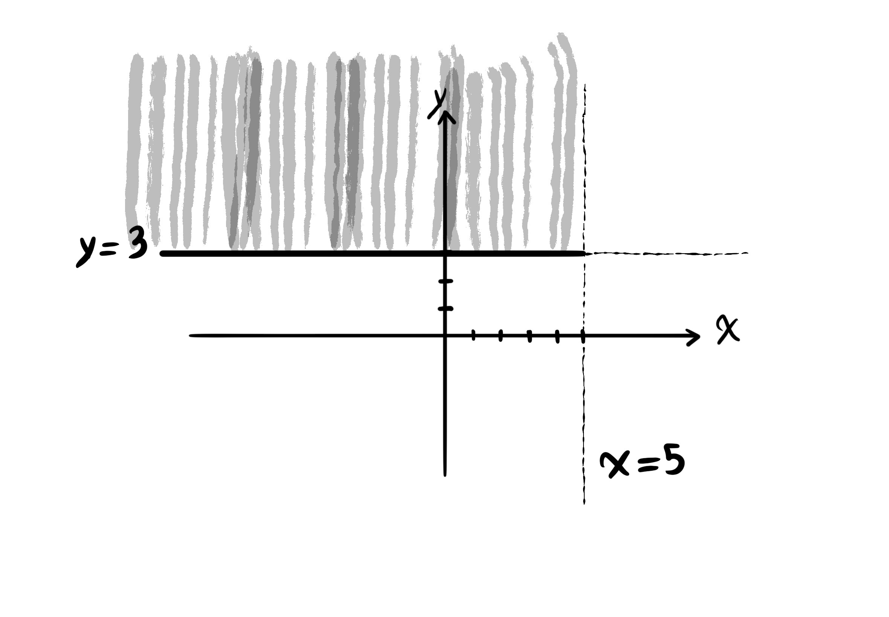
مثال ث
$f(x, y) = \frac{\sqrt{y + 1}}{\sqrt[4]{2 - |x|}}$
$D_f = \{ (x, y) | x, y \in \mathbb{R}, y + 1 \geq 0, 2 - |x| > 0 \} = \{ (x, y) | y \geq -1, -2 < x < 2 \}$.
دامنهی تابع شامل مساحت محصور بین خط افقی وای برابر با منفی یک، و خطهای عمودی ایکس برابر با مثبت دو و منفی دو است، به طوری که نقاط روی خط افقی و بالای آن در دامنه هستند، اما خود خطهای عمودی در بیرون از دامنهی تابعاند.

نمودار توابع دومتغیره، نمودارهایی سهبعدی خواهند بود که به آنها رویه نیز گفته میشود.

$z = f(x, y)$.
سهتایی ایکس، وای و زد.
$(x, y, z)$.
چون رسم اشکال سهبعدی زمانبر است، فقط به نمونههایی از رویهها اشاره میکنیم.

به همین ترتیب، دامنهی توابع سهمتغیره دابلیو برابر با اف ایکس، وای، و زد سهبعدی است و نمودار آن چهاربعدی است، مانند کلاف تاری هوپف یا دایرههای موازی کلیفورد.
مشتقهای جزیی
$y = f(x)$.
$y = x^3 - 2x^5 + sin(x)$.
$y^\prime = f^\prime(x)$.
$y^\prime = 3x^2 - 10x^4 + cos(x)$.
$f^\prime(x) = \lim_{h \to 0} \frac{f(x + h) - f(x)}{h}$.
$f(x, y)$.
در توابع چندمتغیره، وقتی که میخواهیم مشتق بگیریم باید مشخص کنیم که نسبت به کدام متغیر مشتق بگیریم. نسبت به هر متغیر که مشتق بگیریم، باید فرض کنیم که سایر متغیرها ثابت (مشابه عدد ثابت) هستند.
مشتق تابع اف نسبت به متغیر ایکس
$\frac{\partial f}{\partial x}$ یا ${f^\prime}_x$.
مشتق تابع اف نسبت به متغیر وای
$\frac{\partial f}{\partial y}$ یا ${f^\prime}_y$.
مثال
اگر تابع اف به صورت زیر تعریف شده باشد، آنگاه مشتق تابع اف را نسبت به متغیر ایکس و مشتق تابع اف را نسبت به متغیر وای به دست آورید.
$f(x, y) = -3x^4 y^2 + x^3 y - y^3 + x y$
$\frac{\partial f}{\partial x} = -12x^3 y^2 + 3x^2 y + y$.
$\frac{\partial f}{\partial y} = -6x^4 y + x^3 -3y^2 + x$.
مثال
اگر تابع سهمتغیرهی اف به صورت زیر تعریف شده باشد، آنگاه مشتق تابع اف را نسبت به متغیر ایکس، مشتق تابع اف را نسبت به متغیر وای، و مشتق تابع اف را یک بار دیگر نسبت به متغیر زد به دست آورید.
$f(x, y, z) = x^5 y^2 z^3 + x^y - sin(y z^3)$
$\frac{\partial f}{\partial x} = 5x^4 y^2 z^3 + y x^{y -1}$.
$\frac{\partial f}{\partial y} = 2 x^5 y z^3 + x^y \ ln(x) - z^3 \ cos(y z^3)$.
$\frac{\partial f}{\partial z} = 3z^2 x^5 y^2 - 3y z^2 \ cos(y z^3)$.
یادآوری:
$(a^u)^\prime = u^\prime a^u ln(a)$.
مشتقهای جزیی مراتب بالاتر
برای تابع دومتغیرهی اف ایکس و وای مشتقهای مراتب بالاتر به صورت زیر است:
$\frac{\partial^2 f}{\partial x^2} = \frac{\partial}{\partial x} (\frac{\partial f}{\partial x})$ یا ${f^\prime}_{xx}$.
$\frac{\partial^2 f}{\partial y^2} = \frac{\partial}{\partial y} (\frac{\partial f}{\partial y})$ یا ${f^\prime}_{yy}$.
$\frac{\partial^2 f}{\partial x \partial y} = \frac{\partial}{\partial x} (\frac{\partial f}{\partial y})$ یا ${f^\prime}_{yx}$.
$\frac{\partial^2 f}{\partial y \partial x} = \frac{\partial}{\partial y} (\frac{\partial f}{\partial x})$ یا ${f^\prime}_{xy}$.
مثال
اگر تابع دومتغیرهی اف ایکس و وای به صورت زیر تعریف شده باشد، آنگاه مطلوبست:
- مشتق دوم تابع اف نسبت به متغیر ایکس
- مشتق دوم تابع اف نسبت به متغیر وای
- مشتق دوم تابع اف، اول نسبت به متغیر وای و سپس نسبت به متغیر ایکس
- مشتق دوم تابع اف، اول نسبت به متغیر ایکس و دوم نسبت به متغیر وای
$f(x, y) = ln(x^4 y^2) - y$.
$\frac{\partial^2 f}{\partial x^2} = \frac{\partial}{\partial x}(\frac{4x^3 y^2}{x^4 y^2}) = \frac{\partial}{\partial x}(\frac{4}{x}) = \frac{-4}{x^2}$.
$\frac{\partial^2 f}{\partial y^2} = \frac{\partial}{\partial y}(\frac{2x^4 y}{x^4 y^2} - 1) = \frac{\partial}{\partial y}(\frac{2}{y} - 1) = \frac{\partial}{\partial y}(2y^{-1} - 1) = -2y^{-2} = \frac{-2}{y^2}$.
$\frac{\partial^2 f}{\partial x \partial y} = \frac{\partial}{\partial x}(\frac{2y x^4}{x^4 y^2} - 1) = \frac{\partial}{\partial x}(\frac{2}{y} - 1) = 0$.
$\frac{\partial^2 f}{\partial y \partial x} = \frac{\partial}{\partial y}(\frac{4x^3 y^2}{x^4 y^2}) = \frac{\partial}{\partial y}(\frac{4}{x}) = 0$.
یادآوری:
$(ln(u))^\prime = \frac{u^\prime}{u}$.
قاعدهی زنجیرهای
چند حالت از قاعدهی زنجیرهای:
۱. حالت اول. فرض کنید که تابع اف ایکس و وای را داشته باشیم و خود متغیرهای ایکس و وای توابعی بر حسب متغیر دیگیری مانند تی باشند. در این حالت:
$\frac{\partial f}{\partial t} = \frac{\partial f}{\partial x} \frac{\partial x}{\partial t} + \frac{\partial f}{\partial y} \frac{\partial y}{\partial t}$.
مثال
اگر تابع دومتغیرهی اف ایکس و وای با ضابطهی زیر تعریف شده باشد و تعریف متغیرهای ایکس و وای به شکل زیر باشد، آنگاه مطلوبست مشتق جزیی تابع اف نسبت به متغیر مستقل تی.
$f(x, y) = x^3 y - y^2 x + 4x$.
$x = sin(t)$.
$y = 2e^t$.
$\frac{\partial f}{\partial t} = (3x^2 y - y^2 + 4) cos(t) + 2(x^3 - 2yx) e^t$.
یادآوری:
$(e^u)^\prime = u^\prime e^u$.
۲. حالت دوم. داشته باشیم اف ایکس، وای، و زد یک تابع سهمتغیره، و متغیرهای ایکس، وای، و زد توابعی بر حسب متغیر مستقل تی باشند. آنگاه داریم:
$\frac{\partial f}{\partial t} = \frac{\partial f}{\partial x} \frac{\partial x}{\partial t} + \frac{\partial f}{\partial y} \frac{\partial y}{\partial t} + \frac{\partial f}{\partial z} \frac{\partial z}{\partial t}$.
مثال
ضابطهی تابع سهمتغیرهی اف ایکس، وای، و زد به شکل زیر تعریف شده است. متغیرهای ایکس، وای، و زد نیز بر حسب متغیر تی به صورت زیر تعریف شدهاند. مطلوب است مشتق جزیی تابع اف نسبت به متغیر تی.
$f(x, y, z) = x y^3 - x^2 z^3 + ln(x y)$.
$x = t^2$.
$y = cos(4t)$,
$z = \sqrt{t}$.
$\frac{\partial f}{\partial t} = (y^3 - 2x z^3 + \frac{y}{x y}) (2t) + (3y^2 x + \frac{x}{x y})(-4sin(4t)) + (-3z^2 x^2)(\frac{1}{2 \sqrt{t}})$.
یادآوری:
$(ln(u))^\prime = \frac{u^\prime}{u}$.
۳. حالت سوم. اگر ضابطهی تابع دومتغیرهی اف ایکس و وای را داشته باشیم و متغیرهای ایکس و وای توابعی دومتغیره بر حسب متغیرهای مستقل دیگری مانند آر و اس باشند، آنگاه:
$\frac{\partial f}{\partial r} = \frac{\partial f}{\partial x} \frac{\partial x}{\partial r} + \frac{\partial f}{\partial y} \frac{\partial y}{\partial r}$.
$\frac{\partial f}{\partial s} = \frac{\partial f}{\partial x} \frac{\partial x}{\partial s} + \frac{\partial f}{\partial y} \frac{\partial y}{\partial s}$.
مثال
مشتق جزیی تابع اف ایکس و وای نسبت به متغیرهای آر و اس چیست، اگر که متغیرهای ایکس و وای بر حسب متغیرهای آر و اس به صورت زیر تعریف شده باشند.
$f(x, y) = 3x^2 y - y^2 x + x y + y$
$x = s^r$
$y = r + s$
مشتق تابع اف نسبت به متغیر اس برابر است با:
$\frac{\partial f}{\partial s} = (6x y - y^2 + y) (r s^{r - 1}) + (3x^2 - 2y x + x + 1)(1)$.
مشتق تابع اف نسبت به متغیر آر برابر است با:
$\frac{\partial f}{\partial r} = (6x y - y^2 + y) (s^r \ ln(s)) + (3x^2 - 2y x + x + 1)(1)$.
یادآوری:
$\frac{d}{dx} a^x = \frac{d}{dx} e^{x ln(a)} = e^{x ln(a)} (\frac{d}{dx} x ln(a)) = e^{x ln(a)} ln(a) = a^x ln(a)$.
کاربرد مشتقهای جزیی
تعیین مینیمم و ماکزیمم توابع چندمتغیره
روش تعیین اکسترمم توابع دومتغیره اف ایکس و وای:
گام اول
دستگاه دو معادلهای مشتق تابع اف نسبت به متغیر ایکس برابر با صفر، و مشتق تابع اف نسبت به متغیر وای برابر با صفر را حل میکنیم و فرض میکنیم که زوج مرتب ایکس پاییننویس صفر و وای پاییننویس صفر جواب این دستگاه باشد.
$\left\{ \begin{array}{l} \frac{\partial f}{\partial x} = 0 &\\ \frac{\partial f}{\partial y} = 0 \end{array} \right.$.
$(x_0, y_0)$.
گام دوم
تابع دلتای ایکس و وای را به دست میآوریم.
$\Delta(x, y) = {f^\prime}_{xx} {f^\prime}_{yy} - ({f^\prime}_{xy})^2$
گام سوم
مقدار تابع دلتا را در مختصات جواب معادلهی بالا یعنی ایکس صفر و وای صفر حساب میکنیم. همچنین مقدار مشتق دوم تابع اف نسبت به متغیر ایکس را در نقطهی زوج مرتب ایکس صفر و وای صفر محاسبه میکنیم.
$\Delta(x_0, y_0)$.
${f^\prime}_{xx}(x_0, y_0)$.
گام چهارم
اگر مقدار ارزیابی شدهی تابع دلتا بزرگتر از صفر باشد و مقدار مشتق دوم تابع اف نسبت به متغیر ایکس در همان نقطه کوچکتر از صفر باشد، آنگاه نقطهی ایکس صفر و وای صفر یک ماکزیمم نسبی است.
$\Delta(x_0, y_0) > 0$
${f^\prime}_{xx}(x_0, y_0) < 0$
گام پنجم
اگر مقدار ارزیابی شدهی تابع دلتا بزرگتر از صفر باشد و مقدار مشتق دوم تابع اف نسبت به متغیر ایکس در آن نقطه بزرگتر از صفر باشد، آنگاه نقطهی ایکس صفر و وای صفر یک مینیمم نسبی است.
$\Delta(x_0, y_0) > 0$
${f^\prime}_{xx}(x_0, y_0) > 0$
گام ششم
اگر مقدار ارزیابی شدهی تابع دلتا کوچکتر از صفر باشد، آنگاه نقطهی ایکس صفر و وای صفر یک نقطهی زینی است.
$\Delta(x_0, y_0) < 0$
گام هفتم
اگر مقدار ارزیابی شدهی تابع دلتا برابر با صفر باشد، آنگاه به طور قطعی نمیتوان گفت که نقطهی ایکس صفر و وای صفر چه نقطهای است.
$\Delta(x_0, y_0) = 0$

مثال
اکسترممهای نسبی تابع زیر را به دست آورید.
$f(x, y) = 2x y - 5y^2 + 4x - 2x^2 + 4y - 4$.
برای حل، ابتدا مشتقهای جزیی تابع اف ایکس و وای را برابر با صفر قرار میدهیم تا نقطهی اکسترمم به دست آید.
$\left\{ \begin{array}{l} \frac{\partial f}{\partial x} = 0 &\\ \frac{\partial f}{\partial y} = 0 \end{array} \right.$
سپس به دستگاه معادلات زیر میرسیم:
$\left\{ \begin{array}{l} 2y - 4x = -4 &\\ 2x - 10y = -4 \end{array} \right.$
با ضرب کردن معادلهی پایینی در عدد ۲ به نتیجهی زیر میرسیم:
$\left\{ \begin{array}{l} 2y - 4x = -4 &\\ 4x - 20y = -8 \end{array} \right.$
سپس، دو معادله در دستگاه معادلات را با یکدیگر جمع میکنیم تا به مقدار نقطهی اکسترمم در مختصات محور وای برسیم.
$-18y = -12$
$y = \frac{-12}{-18} = \frac{2}{3}$
در ادامه با جایگذاری مقدار به دست آمدهی وای در یکی از معادلهها مقدار مختصات ایکس نقطهی اکسترمم نسبی را محاسبه میکنیم:
$2(\frac{2}{3}) - 4x = -4$
$-4x = -4 - \frac{4}{3} = \frac{-16}{3}$
$x = \frac{16}{12} = \frac{4}{3}$
حالا که مختصات نقطهی اکسترمم نسبی تابع اف را داریم، در مرحلهی بعدی نسبت به تعیین کردن نوع آن اقدام میکنیم.
$(x_0, y_0) = (\frac{4}{3}, \frac{2}{3})$
$(\frac{4}{3}, \frac{2}{3})$
برای تعیین نوع اکسترمم نسبی، مقدار تابع دلتا را در نقطهی اکسترمم و مشتق مرتبهی دوم تابع اف را در همان نقطه حساب میکنیم:
${f^\prime}_{xx}(\frac{4}{3}, \frac{2}{3}) = -4$
${f^\prime}_{yy}(\frac{4}{3}, \frac{2}{3}) = -10$
${f^\prime}_{xy}(\frac{4}{3}, \frac{2}{3}) = 2$.
$\Delta(\frac{4}{3}, \frac{2}{3}) = (-4) (-10) - 2^2 = 40 - 4 = 36$.
در پایان ارزیابی میبینیم که مقدار تابع دلتا بزرگتر از صفر میباشد و مقدار مشتق مرتبهی دوم نسبت به متغیر ایکس تابع اف در نقطهی چهار سوم و دو سوم کوچکتر از صفر است. بنا بر گام چهارم در روش بالا، نقطهی چهار سوم و دو سوم یک نقطهی ماکزیمم نسبی است.
مثال
اکسترممهای نسبی تابع زیر را به دست آورید.
$f(x, y) = x^2 - 2x y + \frac{1}{3} y^3 - 3y$.
$\left\{ \begin{array}{l} \frac{\partial f}{\partial x} = 2x - 2y = 0 &\\ \frac{\partial f}{\partial y} = -2x + y^2 - 3 = 0 \end{array} \right.$
$\left\{ \begin{array}{l} 2x - 2y = 0 &\\ -2x + y^2 = 3 \end{array} \right.$
با جمع کردن دو معادله در دستگاه معادلات بالا به یک معادله میرسیم که به طور کامل بر حسب متغیر وای تعریف شده است.
$y^2 - 2y = 3$.
$y^2 - 2y - 3 = 0$.
جواب معادلهی بالا دو عدد متمایز ۳ و منفی ۱ برای متغیر وای میباشد.
$\frac{-(-2) \pm \sqrt{4 + 12}}{2} = \frac{2 \pm 4}{2} = \frac{1 \pm 2}{1}$
$y_1 = 3$ و $y_2 = -1$.
این گام میانی برای پیدا کردن مختصات محور ایکس مرتبط با نقطههای وای صفر و وای یک در بالاست:
$2x - 2y_1 = 0$,
$2x - 2(3) = 0$,
$2x = 6$,
$x_1 = 3$.
$2x - 2y_2 = 0$,
$2x - 2(-1) = 0$,
$2x = -2$,
$x_2 = -1$.
مختصات دو نقطهی اکسترمم نسبی به صورت زیر است:
$(x_0, y_0) = (3, 3)$ و $(x_1, y_1) = (-1, -1)$.
مقدار تابع دلتا را در مختصات عمومی ایکس و وای به دست میاوریم:
${f^\prime}_{xx} = 2$,
${f^\prime}_{yy} = 2y$,
${f^\prime}_{xy} = -2$.
$\Delta(x, y) = {f^\prime}_{xx} - {f^\prime}_{yy} - ({f^\prime}_{xy})^2 = (2) (2y) - (-2)^2 = 4y - 4$.
برای هر کدام از نقطههای اکسترمم نسبی به ترتیب مقادیر دلتای متمایزی به دست آوردیم:
$\Delta(x_0, y_0) = 4 (3) - 4 = 8$ و $\Delta(x_1, y_1) = 4 (-1) - 4 = -8$.
${f^\prime}_{xx}(x_0, y_0) = 2$.
اما مقدار تابع دلتا در نقطهی با مختصات ایکس صفر و وای صفر بزرگتر از صفر است و مقدار مشتق مرتبه ی دوم تابع اف در همان نقطه تیز بزرگتر از صفر است. این شرایط نقطهی ایکس برابر با سه و وای برابر با سه را از نوع مینیمم نسبی برای تابع اف دستهبندی میکند.
$(x_0, y_0) = (3, 3)$
$\Delta(3, 3) > 0$ و ${f^\prime}_{xx}(3, 3) > 3$
آزمودن نقطهی دیگر با مختصات ایکس یک و وای یک به ما نتیجهی دلتا کوچکتر از صفر را میدهد. بنابر گام ششم در روش بالا، نقطهی اکسترمم با مختصات ایکس برابر با منفی یک و وای برابر با منفی یک، نفطهای زینی برای تابع اف به شمار میرود.
مشتق جهتی توابع چندمتغیره
بردار گرادیان تابع اف ایکس و وای در نقطهی ایکس پاییننویس صفر و وای پاییننویس صفر برداری است که بر سطح رویه تابع اف ایکس و وای در نقطهی ایکس صفر و وای صفر عمود است.
نمودار تابع اف ایکس و وای:
$f(x, y)$
$(x_0, y_0)$

گرادیان تابع اف ایکس و وای در نقطهی آ به صورت زیر به دست میآید:
$f(x, y)$
$\overrightarrow{\nabla f}$ یا $grad \ f = \left| \frac{\partial f}{\partial x} \overrightarrow{i} + \frac{\partial f}{\partial y} \overrightarrow{j} \right|_{a}$.
و گرادیان تابع دابلیو برابر با اف ایکس، وای و زد در نقطهی آ به صورت زیر به دست میآید:
$w = f(x, y, z)$
$\left| \frac{\partial f}{\partial x} \overrightarrow{i} + \frac{\partial f}{\partial y} \overrightarrow{j} + \frac{\partial f}{\partial z} \overrightarrow{k} \right|_{a}$.
در اینجا آی، جی و کی بردارهای یکه در فضای سهبعدی هستند. این سهتاییهای فضایی طولی برابر یا یک واحد دارند، با هم مستقل خطی اند و دو به دو متعامدند. یعنی اینکه نمیتوان هیچکدام از آنها را به شکل ترکیب خطی از دوتای دیگر نوشت.
$\overrightarrow{i} = (1, 0, 0)$
$\overrightarrow{j} = (0, 1, 0)$
$\overrightarrow{k} = (0, 0, 1)$
$|\overrightarrow{i}| = |\overrightarrow{j}| = |\overrightarrow{k}| = 1$.
$(3, -2, 1) = 3 \overrightarrow{i} - 2 \overrightarrow{j} + \overrightarrow{k}$.
مثال
گرادیان تابع اف ایکس و وای را در نقطهی ایکس برابر با ۲ و وای برابر با ۳ به دست آورید.
$f(x, y) = -x^4 y^3 + x^2 y - x$.
$(2, 3)$.
$\overrightarrow{\nabla f} |_{(2, 3)} = (-4x^3 y^3 + 2x y - 1) \overrightarrow{i} + (-3x^4 y^2 + x^2) \overrightarrow{j}$,
$\overrightarrow{\nabla f} |_{(2, 3)} = ((-4) (2^3) (3^3) + 2(2) (3) - 1) \overrightarrow{i} + ((-3) (2^4) (3^2) + 2^2) \overrightarrow{j}$,
$\overrightarrow{\nabla f} |_{(2, 3)} = ((-4) (8) (27) + 12 - 1) \overrightarrow{i} + ((-3) (16) (9) + 4) \overrightarrow{j}$,
$\overrightarrow{\nabla f} |_{(2, 3)} = -853 \overrightarrow{i} - 428 \overrightarrow{j} = (-853, -428)$.
به یاد آورید که برای محاسبهی شیب خط ال در نقطهای با طول ایکس پاییننویس صفر، در صفحهی مختصات ایکس-وای، که با حرف ام پاییننویس ال نمایش داده میشود، حد زیر را حساب میکنیم:
$f^\prime (x_0) = m_L$.
$f^\prime (x_0) = lim_{x \to x_0} \frac{f(x) - f(x_0)}{x - x_0}$.

حالا، مشتق جهتی تابع دومتغیرهی اف ایکس و وای در نقطهی آ در جهت بردار یو از راه زیر به دست میاید:
$Df_{\overrightarrow{u}} = \overrightarrow{\nabla f} \cdot e_{\overrightarrow{u}}$,
که در اینجا عملگر نقطه نمایانگر ضرب داخلی دو بردار است، و ای پاییننویس یو بردار یکهی بردار یو را نمایش میدهد.
برای محاسبه کردن بردار یکهی بردار یو، عنصرهای بردار یو را تک به تک بر اندازهی بردار یو تقسیم میکنیم:
$e_{\overrightarrow{u}} = \frac{\overrightarrow{u}}{|\overrightarrow{u}|}$.
اندازهی بردار یو برابر است با ریشهی دوم مجموع مجذور مولفههای بردار.
$a = (a_1, a_2)$
$|\overrightarrow{a}| = \sqrt{{a_1}^2 + {a_2}^2}$.
$a = (a_1, a_2, a_3)$
$|\overrightarrow{a}| = \sqrt{{a_1}^2 + {a_2}^2 + {a_3}^2}$
ضرب داخلی یک جفت بردار مانند آ و ب به دو شکل زیر قابل انجام شدن است، که در اینجا آلفا زاویهی بین دو بردار را نمایش میدهد:
$\overrightarrow{a} = (a_1, a_2)$ و $\overrightarrow{b} = (b_1, b_2)$
$\overrightarrow{a} \cdot \overrightarrow{b} = a_1 b_1 + a_2 b_2$ یا $\overrightarrow{a} \cdot \overrightarrow{b} = |\overrightarrow{a}| |\overrightarrow{b}| cos(\alpha)$
این روش ضرب داخلی برای بردارهایی که در فضای سهبعدی تعریف شدهاند نیز کاربرد دارد:
$\overrightarrow{a} = (a_1, a_2, a_3)$ و $\overrightarrow{b} = (b_1, b_2, b_3)$
$\overrightarrow{a} \cdot \overrightarrow{b} = a_1 b_1 + a_2 b_2 + a_3 b_3$.
برای مثال، جابجایی بردار آ به عنوان یک پیکان برابر است با مختصات سر آن منهای مختصات دم آن.
$(6, 4) - (2, 1) = (4, 3)$.
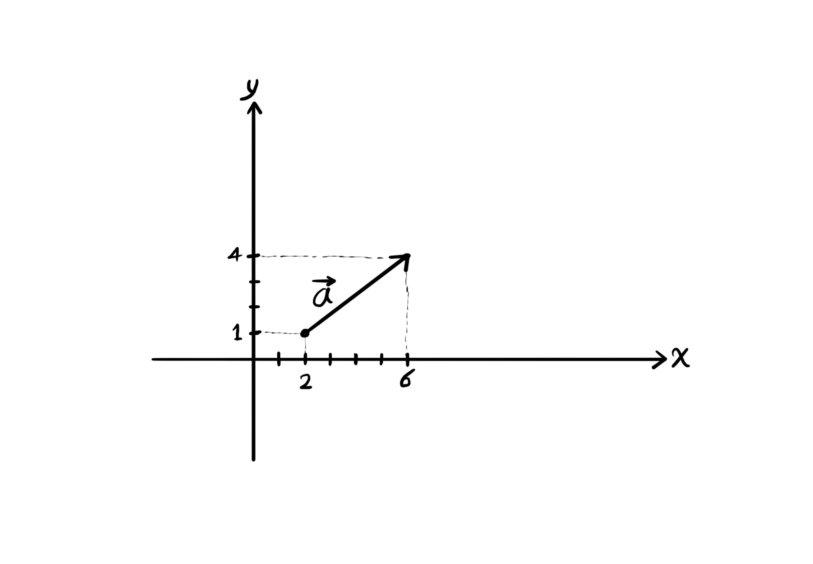
همچنین اندازهی طول بردار آ از راه زیر به دست میآید:
$\overrightarrow{a} = \sqrt{4^2 + 3^2} = \sqrt{25} = 5$.
مثال
مشتق جهتی تابع اف ایکس و وای را در نقطهی پی در جهت بردار یو به دست آورید.
$f(x, y) = x^3 y - y^2 x + y - 1$
$p = (1, 2)$
$\overrightarrow{u} = 4 \overrightarrow{i} - 3 \overrightarrow{j}$.
در ابتدا باید بردار گرادیان تابع اف را محاسبه کنیم.
$\overrightarrow{\nabla f} = \frac{\partial f}{\partial x} \overrightarrow{i} + \frac{\partial f}{\partial y} \overrightarrow{j} |_{(1, 2)}$,
$\overrightarrow{\nabla f} = (3x^2 y - y^2) \overrightarrow{i} + (x^3 - 2y x + 1) \overrightarrow{j} |_{(1, 2)}$,
$\overrightarrow{\nabla f} = (6 - 4) \overrightarrow{i} + (1 - 4 + 1) \overrightarrow{j} = 2 \overrightarrow{i} - 2 \overrightarrow{j} = (2, -2)$.
در گام دوم، باید بردار یکهی بردار یو را محاسبه کنیم که در جهت آن مشتقگیری انجام میشود.
$e_{\overrightarrow{u}} = \frac{4 \overrightarrow{i} - 3 \overrightarrow{j}}{\sqrt{4^2 + (-3)^2}} = \frac{(4, -3)}{\sqrt{25}} = (\frac{4}{5}, \frac{-3}{5})$.
در پایان، یک ضرب داخلی میان گرادیان تابع اف و بردار یکهی یو انجام میدهیم تا مقدار مشتق جهتی تابع اف در نقطهی پی در جهت بردار یو به دست آید.
$Df_{\overrightarrow{u}} = (2, -2) \cdot (\frac{4}{5}, \frac{-2}{5}) = 2 \frac{4}{5} + -2 \frac{-2}{5} = \frac{8}{5} + \frac{4}{5} = \frac{12}{5}$.
مثال
دمای هر نقطه در فضای سهبعدی یک اتاق با استفاده از رابطهی زیر به دست می آید:
$T(x, y, z) = x^2 y^2 + z x - z^2 y$
اگر از نقطهی پی با طول یک، عرض منفی یک و ارتفاع یک در این اتاق در جهت بردار یو حرکت کنیم، مقدار تغییرات دما چقدر احساس میشود؟
$p = (1, -1, 1)$
$\overrightarrow{u} = (2, 1, 1)$
این سوال از ما مشتق جهتی تابع تی در نقطهی پی در جهت بردار یو را میپرسد. پس اول گرادیان تابع تی را حساب میکنیم. دوم، بردار یکهی یو را برای دانستن جهت مشتق به دست میآوریم. و در پایان، مشتق جهتی تابع اف را با استفاده از ضرب داخلی پیدا میکنیم.
$\overrightarrow{\nabla T} = \frac{\partial T}{\partial x} \overrightarrow{i} + \frac{\partial T}{\partial y} \overrightarrow{j} + \frac{\partial T}{\partial z} \overrightarrow{k} |_{(1, -1, 1)}$.
$\overrightarrow{\nabla T} = (2x y^2 + z) \overrightarrow{i} + (2y x^2 - z^2) \overrightarrow{j} + (x - 2z y) \overrightarrow{k} |_{(1, -1, 1)}$.
$\overrightarrow{\nabla T} = (2 + 1) \overrightarrow{i} + (-2 - 1) \overrightarrow{j} + (1 + 2) \overrightarrow{k} = 3 \overrightarrow{i} - 3 \overrightarrow{j} + 3 \overrightarrow{k}$.
$e_{\overrightarrow{u}} = \frac{(2, 1, 1)}{\sqrt{4 + 1 + 1}} = \frac{(2, 1, 1)}{\sqrt{6}} = (\frac{2}{\sqrt{6}}, \frac{1}{\sqrt{6}}, \frac{1}{\sqrt{6}})$.
$DT_{\overrightarrow{u}} = (3, -3, 3) \cdot (\frac{2}{\sqrt{6}}, \frac{1}{\sqrt{6}}, \frac{1}{\sqrt{6}}) = \frac{(3) (2)}{\sqrt{6}} + \frac{-3}{\sqrt{6}} + \frac{3}{\sqrt{6}}$.
$DT_{\overrightarrow{u}} = \frac{6}{\sqrt{6}} = \frac{6 \sqrt{6}}{\sqrt{6} \sqrt{6}} = \frac{6 \sqrt{6}}{6} = \sqrt{6}$.
کاربرد گرادیان
نوشتن معادلهی صفحه در فضای سهبعدی حقیقی
برای نوشتن معادلهی صفحه در فضای سهبعدی به یک نقطه از صفحه و یک بردار عمود بر صفحه (به اسم بردار نرمال صفحه) نیاز داریم.

$A = (x, y, z)$.
$A_0 = (x_0, y_0, z_0)$.
$\overrightarrow{n} = (a, b, c)$.
برای نوشتن معادلهی صفحه، یک نقطهی دیگر روی صفحه مانند آ در نظر میگیریم و بردار بین دو نقطهی آ پاییننویس صفر و آ را رسم میکنیم. فرض کنیم ان بردار نرمال صفحه باشد. واضح است که بردارهای ان و آ-آ صفر بر هم عمود هستند. بنابراین ضرب داخلی آنها صفر میشود.
$\overrightarrow{A_0 A} = (x - x_0, y - y_0, z - z_0)$, $\overrightarrow{n} = (a, b, c)$.
معادلهی صفحه با بردار نرمال صفحه ان که از نقطهی آ پاییننویس صفر میگذرد.
$\overrightarrow{A_0 A} \cdot \overrightarrow{n} = a (x - x_0) + b (y - y_0) + c (z - z_0) = 0$.
مثال
معادلهی صفحهای بنویسید که از نقطهی پی با طول ۳، عرض منفی ۲ و ارتفاع ۱ بگذرد و بردار نرمال آن ان باشد.
$p = (3, -2, 1)$
$\overrightarrow{n} = (5, 2, 3)$.
$5 (x - 3) + 2 (y + 2) + 3 (z - 1) = 0$.
بعد از دانستن معادلهی صفحه میتوان گفت که یکی دیگر از کاربردهای گرادیان، به دست آوردن معادلهی صفحهی مماس بر رویهی تابع چندمتغیرهی اف، در نقطهای روی آن است.

صفحهی پی بر رویه در نقطهی آ مماس شده است.
مثال
معادلهی صفحه مماس بر رویهی تابع اف ایکس، وای و زد را در نقطهی پی به دست آورید.
$f(x, y, z) = 3z - x \ cos(y) + e^x$
$P = (0, 0, 0)$.
در اینجا بردار نرمال صفحه را در نقطهی پی نداریم، اما طبق تعریف بردار گرادیان، بردار نرمال صفحه در این نقطه، همان بردار گرادیان در این نقطه است.
$\overrightarrow{\nabla f} = \frac{\partial f}{\partial x} \overrightarrow{i} + \frac{\partial f}{\partial y} \overrightarrow{j} + \frac{\partial f}{\partial z} \overrightarrow{k} |_{(0, 0, 0)}$.
$\overrightarrow{\nabla f} = (-cos(y) + e^x) \overrightarrow{i} + (x \ sin(y)) \overrightarrow{j} + 3 \overrightarrow{k} |_{(0, 0, 0)}$.
$\overrightarrow{\nabla f} = (-1 + 1) \overrightarrow{i} + 0 \overrightarrow{j} + 3 \overrightarrow{k} = (0, 0, 3)$.
معادلهی صفحه:
$0 (x - 0) + 0 (y - 0) + 3 (z - 0) = 0$ یا $z = 0$.
مثال
معادلهی صفحهی مماس بر رویهی تابع اف ایکس، وای و زد را در نقطهی آ به دست آورید.
$f(x, y, z) = x z^2 - y z + y^2 x$
$A = (1, 1, 1)$.
بردار نرمال صفحه همان بردار گرادیان تابع اف در نقطهی آ است.
$\overrightarrow{\nabla f} = \frac{\partial f}{\partial x} \overrightarrow{i} + \frac{\partial f}{\partial y} \overrightarrow{j} + \frac{\partial f}{\partial z} \overrightarrow{k} |_{(1, 1, 1)}$.
$\overrightarrow{\nabla f} = (z^2 + y^2) \overrightarrow{i} + (2y x - z) \overrightarrow{j} + (2z x - y) \overrightarrow{k} |_{(1, 1, 1)}$.
$\overrightarrow{\nabla f} = 2 \overrightarrow{i} + \overrightarrow{j} + \overrightarrow{k} = (2, 1, 1)$.
معادلهی صفحه برابر است با:
$2 (x - 1) + (y - 1) + (z - 1) = 0$.
تمرین
تمرین ۱
دامنهی توابع زیر را به دست آورید و با رسم شکل نشان دهید.
$f(x, y) = \frac{x + y + 1}{x - y}$.
$f(x, y, z) = \frac{1}{z} + \sqrt{x - y}$.
$f(x, y) = \sqrt{x^2 + y^2 - 3}$.
$f(x, y) = \frac{\sqrt{y - 3}}{\sqrt{2 - |x|}}$.
حل تمرین ۱ قسمت اول
ریشههای مخرج نباید در دامنهی تابع باشند.
$f(x, y) = \frac{x + y + 1}{x - y}$.
$x - y \neq 0$.
$y \neq x$.
دامنهی تابع شامل تمام صفحهی مختصات میشود، به جز نقطههایی که روی خط همانی وای برابر با ایکس قرار دارند.
$D_f = \{ (x, y) | x, y \in \mathbb{R}, x \neq y \}$.

حل تمرین ۱ قسمت دوم
ریشههای مخرج نباید در دامنهی تابع باشند.
$z \neq 0$.
ورودی تابع رادیکال با فرجهی زوج نباید منفی باشد.
$x - y \geq 0$.
$x \geq y$.
دامنهی تابع شامل تمام فضای سهبعدی یک سمت صفحهی همانی وای برابر با ایکس میباشد، به جز نقاطی که روی صفحهی زد برابر با صفر قرار دارند.
$D_f = \{ (x, y, z) | x, y, z \in \mathbb{R}, x \geq y, z \neq 0 \}$.
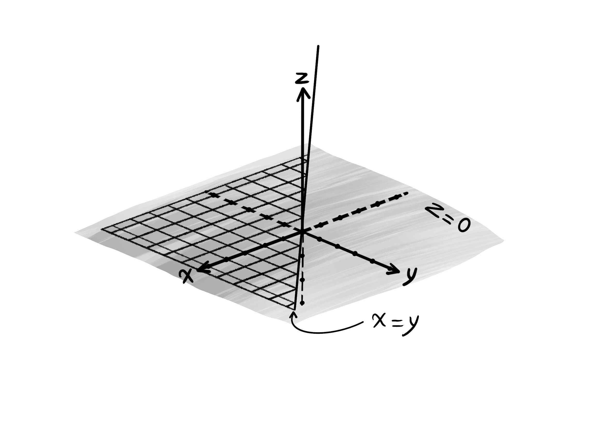
حل تمرین ۱ قسمت سوم
آرگومان تابع ریشهی دوم باید غیر منفی باشد.
$x^2 + y^2 - 3 \geq 0$. $x^2 + y^2 \geq 3$.
$D_f = \{ (x, y) | x, y \in \mathbb{R}, x^2 + y^2 \geq 3 \}$.
دامنهی تابع اف برابر است با نقاطی که روی رویهی سهمیگون حاصلجمع مجذور ایکس و مجذور وای قرار دارند، به جز بخشهایی از رویه که ارتفاع آنها کمتر از ۳ باشد.

حل تمرین ۱ قسمت چهارم
آرگومان تابع ریشهی دوم باید غیر منفی باشد.
$y - 3 \geq 0$ و $2 - |x| > 0$.
$\left\{ \begin{array}{l} y - 3 \geq 0 &\\ |x| < 2 \end{array} \right.$
$\left\{ \begin{array}{l} y \geq 3 &\\ -2 < x < 2 \end{array} \right.$
همچنین، ریشههای مخرج در دامنه نیستند.
$2 - |x| \neq 0$.
دامنهی تابع اف شامل مساحت محصور بین خطهای وای برابر ۳، ایکس برابر ۲ و ایکس برابر منفی ۲ است، به جز نقاطی که روی خطهای ایکس برابر ۲ و ایکس برابر منفی ۲ قرار دارند.
$D_f, \{ (x, y) | x, y \in \mathbb{R}, y \geq 3, -2 < x < 2 \}$.
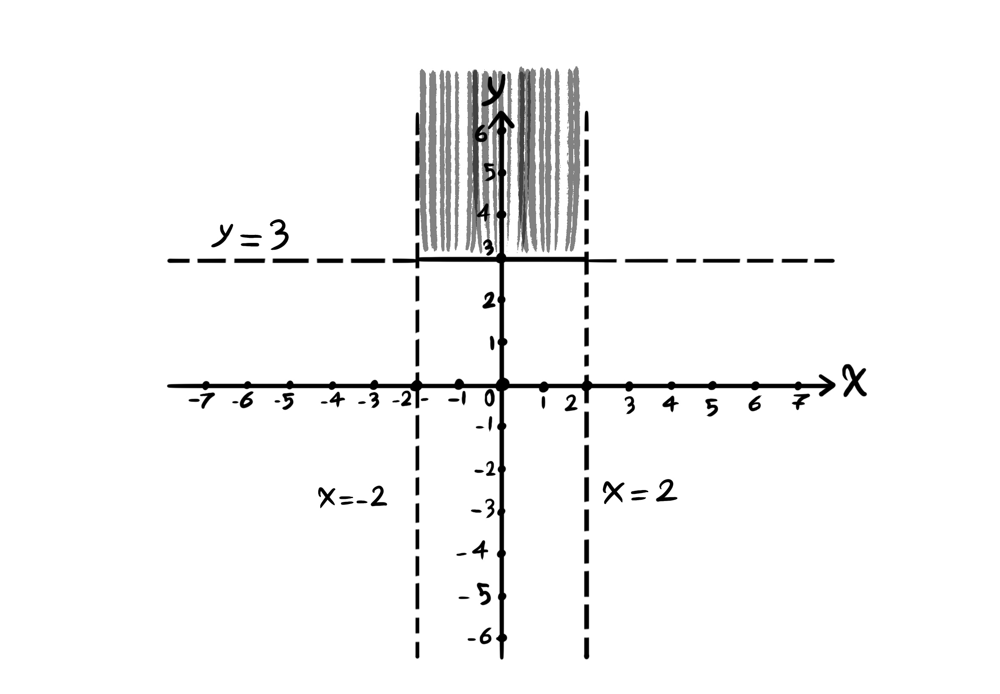
تمرین ۲
اگر ضابطهی تابع اف ایکس و وای به شکل زیر داده شود، مطلوبست مشتق مرتبه دوم تابع اف نسبت به متغیر وای، و همچنین مشتق مرتبه دوم تابع اف اول نسبت به متغیر وای و سپس نسبت به متغیر ایکس.
$f(x, y) = -x^3 y^2 + sin(x y)$
$\frac{\partial^2 f}{\partial y^2}$ و $\frac{\partial^2 f}{\partial x \partial y}$.
حل تمرین ۲ قسمت اول
$\frac{\partial^2 f}{\partial y^2} = \frac{\partial}{\partial y} (\frac{\partial f}{\partial y})$.
$\frac{\partial^2 f}{\partial y^2} = \frac{\partial}{\partial y} (\frac{\partial (-x^3 y^2 + sin(x y))}{\partial y})$.
$\frac{\partial^2 f}{\partial y^2} = \frac{\partial}{\partial y} (-2x^3 y + x \ cos(xy)) = -2x^3 - x^2 \ sin(x y)$.
حل تمرین ۲ قسمت دوم
$\frac{\partial^2 f}{\partial x \partial y} = \frac{\partial}{\partial x} (\frac{\partial f}{\partial y})$.
$\frac{\partial^2 f}{\partial x \partial y} = \frac{\partial}{\partial x} (\frac{\partial (-x^3 y^2 + sin(x y))}{\partial y})$.
$\frac{\partial^2 f}{\partial x \partial y} = \frac{\partial}{\partial x} (-2x^3 y + x \ cos(x y)) = -6x^2 y + cos(x y) - x y \ sin(x y)$.
تمرین ۳
قاعدهی زنجیرهای. اگر تابع اف ایکس و وای با ضابطهی زیر باشد و متغیر ایکس و متغیر وای نیز بر حسب متغیر تی داده شده باشند، آنگاه مطلوبست مشتق تابع اف نسبت به متغیر تی.
$f(x, y) = x^2 y^2 - x^3 y$.
$x = cos(t)$ و $y = 4 e^{2t}$.
$\frac{\partial f}{\partial t}$.
حل تمرین ۳
$\frac{\partial f}{\partial t} = \frac{\partial f}{\partial x} \frac{\partial x}{\partial t} + \frac{\partial f}{\partial y} \frac{\partial y}{\partial t}$.
$\frac{\partial x}{\partial t} = \frac{\partial}{\partial t} cos(t) = -sin(t)$.
$\frac{\partial y}{\partial t} = \frac{\partial}{\partial t} 4e^{2t} = 8e^{2t}$.
$\frac{\partial f}{\partial t} = \frac{\partial f}{\partial x} (-sin(t)) + \frac{\partial f}{\partial y} (8e^{2t})$.
$\frac{\partial f}{\partial x} = 2y^2 x - 3y x^2$.
$\frac{\partial f}{\partial y} = 2x^2 y - x^3$.
$\frac{\partial f}{\partial t} = (2y^2 x - 3y x^2) (-sin(t)) + (2x^2 y - x^3) (8e^{2t})$.
تمرین ۴
اگر ضابطهی تابع اف ایکس و وای به شکل زیر باشد و متغیرهای ایکس و وای نیز توابعی بر حسب متغیرهای آر و اس باشند، آنگاه مشتق تابع اف نسبت به متغیر اس را حساب کنید.
$f(x, y) = x y^2 - y x$.
$x = s + 5r$ و $y = s^r$.
$\frac{\partial f}{\partial s}$.
حل تمرین ۴
$\frac{\partial f}{\partial s} = \frac{\partial f}{\partial x} \frac{\partial x}{\partial s} + \frac{\partial f}{\partial y} \frac{\partial y}{\partial s}$.
$\frac{\partial f}{\partial x} = y^2 - y$ و $\frac{\partial f}{\partial y} = 2x y - x$.
$\frac{\partial x}{\partial s} = \frac{\partial (s + 5r)}{\partial s} = 1$ و $\frac{\partial y}{\partial s} = \frac{\partial s^r}{\partial s} = r \ s^{r - 1}$.
$\frac{\partial f}{\partial s} = (y^2 - y) (1) + (2x y - x) (r \ s^{r - 1})$.
تمرین ۵
مشتق جهتی تابع اف ایکس، وای و زد را در نقطهی آ و در جهت بردار یو به دست آورید.
$f(x, y, z) = z x^2 - y x + y^2 z$
$A = (0, 1, -1)$
$\overrightarrow{u} = (1, 1, -1)$.
حل تمرین ۵
$e_{\overrightarrow{u}} = \frac{\overrightarrow{u}}{|\overrightarrow{u}|}$.
$|\overrightarrow{u}| = \sqrt{1^2 + 1^2 + (-1)^2} = \sqrt{1 + 1 + 1} = \sqrt{3}$.
$e_{\overrightarrow{u}} = \frac{(1, 1, -1)}{\sqrt{3}} = (\frac{1}{\sqrt{3}}, \frac{1}{\sqrt{3}}, \frac{-1}{\sqrt{3}})$.
$\overrightarrow{\nabla f} = (2z x - y) \overrightarrow{i} + (-x + 2z y) \overrightarrow{j} + (x^2 + y^2) \overrightarrow{k}$.
$Df_{\overrightarrow{u}} = \overrightarrow{\nabla f} \cdot e_{\overrightarrow{u}}$.
$\overrightarrow{\nabla f} |_A = (2z x - y) \overrightarrow{i} + (-x + 2z y) \overrightarrow{j} + (x^2 + y^2) \overrightarrow{k} |_{A = (0, 1, -1)}$.
$\overrightarrow{\nabla f} |_{(0, 1, -1)} = (2 (-1) (0) - 1) \overrightarrow{i} + (0 + 2 (-1) (1)) \overrightarrow{j} + (0^2 + 1^2) \overrightarrow{k}$.
$\overrightarrow{\nabla f} |_{(0, 1, -1)} = - \overrightarrow{i} - 2 \overrightarrow{j} + \overrightarrow{k}$.
$Df_{\overrightarrow{u}} = (-1, -2, 1) \cdot (\frac{1}{\sqrt{3}}, \frac{1}{\sqrt{3}}, \frac{-1}{\sqrt{3}})$.
$Df_{\overrightarrow{u}} = (-1) (\frac{1}{\sqrt{3}}) \overrightarrow{i} + (-2) (\frac{1}{\sqrt{3}}) \overrightarrow{j} + (1) (\frac{-1}{\sqrt{3}}) \overrightarrow{k}$.
$Df_{\overrightarrow{u}} = (\frac{-1}{\sqrt{3}}, \frac{-2}{\sqrt{3}}, \frac{-1}{\sqrt{3}}) = (\frac{-\sqrt{3}}{3}, \frac{-2\sqrt{3}}{3}, \frac{-\sqrt{3}}{3})$.
انتگرال دوگانه
در حالت تکبعدی حاصل انتگرال برابر است با مساحت بین نمودار تابع اف ایکس و محور ایکسها از نقطهی آ تا نقطهی بی.
$S = \int_{a}^{b} f(x) \ dx$.

به طور تعمیم یافته، منظور از انتگرال دوگانهی تابع اف ایکس و وای حجم شکل سهبعدی که از بالا به رویهی تابع اف ایکس و وای و از پایین به ناحیهی آ روی صفحهی ایکس-وای محدود است، میباشد.
$\int \int_A f(x, y) \ dA$

انواع ناحیهی انتگرالگیری
۱. ناحیه هم نسبت به متغیر ایکس منظم است و هم نسبت به متغیر وای منظم است. (ناحیههای مستطیلی شکل) میگوییم ناحیهی آ نسبت به متغیر ایکس منظم است، هرگاه که هر خط گذرنده از نقاط گوشهای ناحیهی آ، و موازی محور ایکسها، از داخل ناحیه عبور نکند. و میگوییم که ناحیهی آ نسبت به متغیر وای منظم است، هرگاه که هر خط گذرنده از نقاط گوشهای ناحیهی آ، و موازی محور وایها، از داخل ناحیه عبور نکند.

این ناحیه هم نسبت به متغیر ایکس منظم است و هم نسبت به متغیر وای منظم است.
نکتهی مهم: اگر ناحیهای نسبت به متغیر ایکس منظم باشد، آنگاه میتوانیم به جای دیفرانسیل آ مقدار حاصلضرب دیفرانسیل ایکس در دیفرانسیل وای را قرار دهیم. (یعنی دیفرانسیل ایکس را اول بیاوریم.) و اگر ناحیهای نسبت به متغیر وای منظم باشد، آنگاه میتوانیم به جای دیفرانسیل آ مقدار حاصلضرب دیفرانسیل وای در دیفرانسیل ایکس را قرار دهیم. (یعنی دیفرانسیل وای را اول بیاوریم.) و اگر ناحیه نسبت به متغیر ایکس منظم نبود، هیچوقت نمیتوانیم حاصلضرب دیفرانسیل ایکس در دیفرانسیل وای را بنویسیم. یا اگر ناحیه نسبت به متغیر وای منظم نبود، هیچوقت نمیتوانیم حاصلضرب دیفرانسیل وای در دیفرانسیل ایکس را بنویسیم.
در اینجا ناحیهی آ هم نسبت به متغیر ایکس منظم است و هم نسبت به متغیر وای منظم است. پس:
$\int \int_A f(x, y) \ dA = \int_c^d \int_a^b f(x, y) dx \ dy = \int_a^b \int_c^d f(x, y) dy \ dx$.
ناحیهی آ دو مرز دارد:
$a \leq x \leq b$ و $c \leq y \leq d$.
مثال
اگر ناحیهای به شکل آ به همراه دو ضابطه باشد، انتگرال دوگانهی تابع دومتغیرهی اف ایکس و وای را روی این ناحیه به دست آورید.
$A = \{ (x, y) | x, y \in \mathbb{R}, \ 2 \leq x \leq 4, \ 1 \leq y \leq 2 \}$.
$f(x, y) = x^2 y - x y^3 + x$.
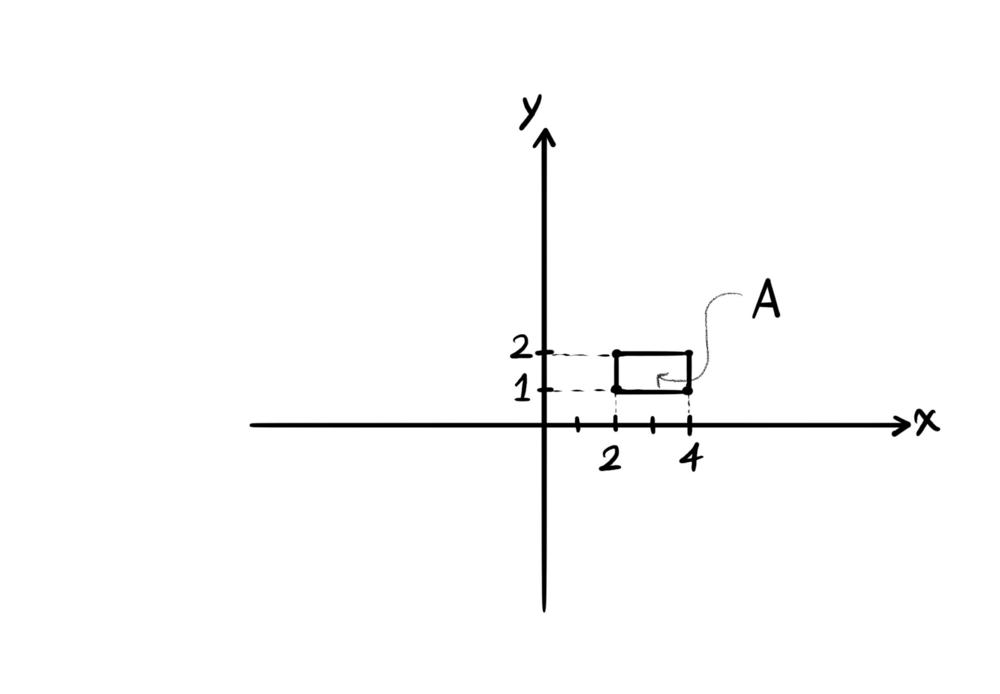
$S = \int_2^4 \int_1^2 (x^2 y - x y^3 + x) dy \ dx = \int_2^4 \left| (\frac{x^2 y^2}{2} - \frac{x y^4}{4} + x y) \right|_1^2 dx.$
$S = \int_2^4 ((2x^2 - 4x + 2x) - (\frac{x^2}{2} - \frac{x}{4} + x)) dx$.
$S = \int_2^4 (\frac{3}{2} x^2 - 3x + \frac{x}{4}) dx$.
$S = \left| (\frac{x^3}{2} - 3 \frac{x^2}{2} + \frac{x^2}{8}) \right|_2^4$.
$S = (\frac{4^3}{2} - (3) \frac{4^2}{2} + \frac{4^2}{8}) - (\frac{2^3}{2} - (3) \frac{2^2}{2} + \frac{2^2}{8})$.
حجم شکل برابر است با:
$S = (32 - 24 + 2) - (4 - 6 + \frac{1}{2}) = (10) - (-2 + \frac{1}{2}) = 10 + \frac{3}{2} = \frac{20 + 3}{2} = \frac{23}{2}$.
۲. ناحیهی دوم. ناحیهای است که نسبت به متغیر ایکس منظم است در حالی که نسبت به متغیر وای نامنظم است.

$\int \int_A f(x, y) dA = \int_c^d \int_{h(y)}^{g(y)} f(x, y) dx \ dy$.
۳. ناحیهی سوم. ناحیهای است که نسبت به متغیر وای منظم است اما نسبت به متغیر ایکس نامنظم است.
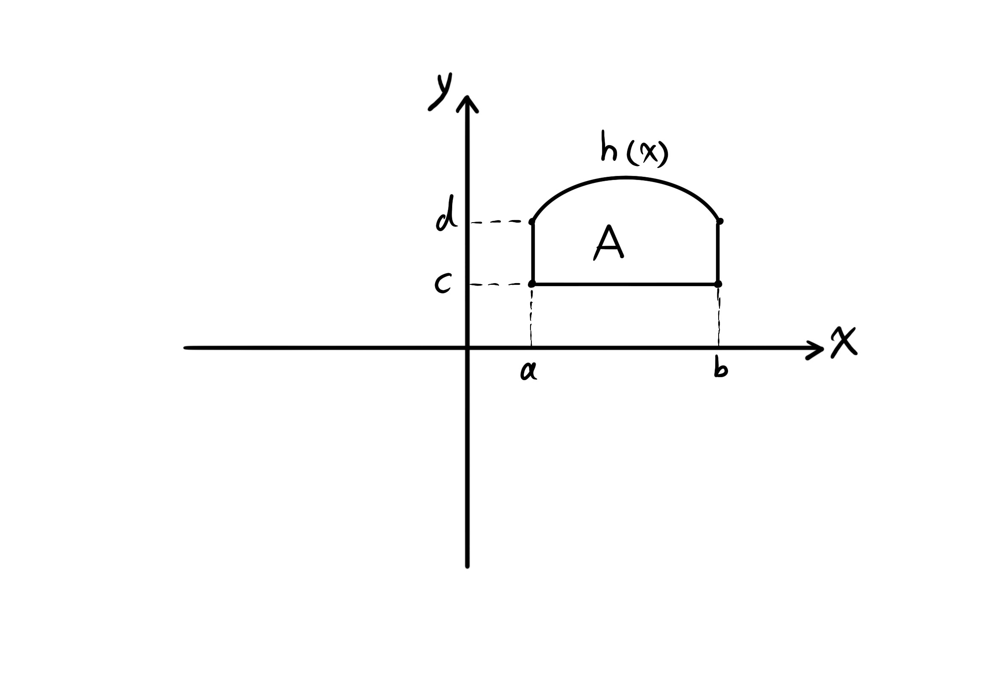
$\int \int_A f(x, y) dA = \int_a^b \int_c^{h(x)} f(x,y) dy \ dx$.
۴. ناحیهی چهارم. ناحیهای است که نه نسبت به متغیر ایکس منظم است و نه نسبت به متغیر وای منظم است.
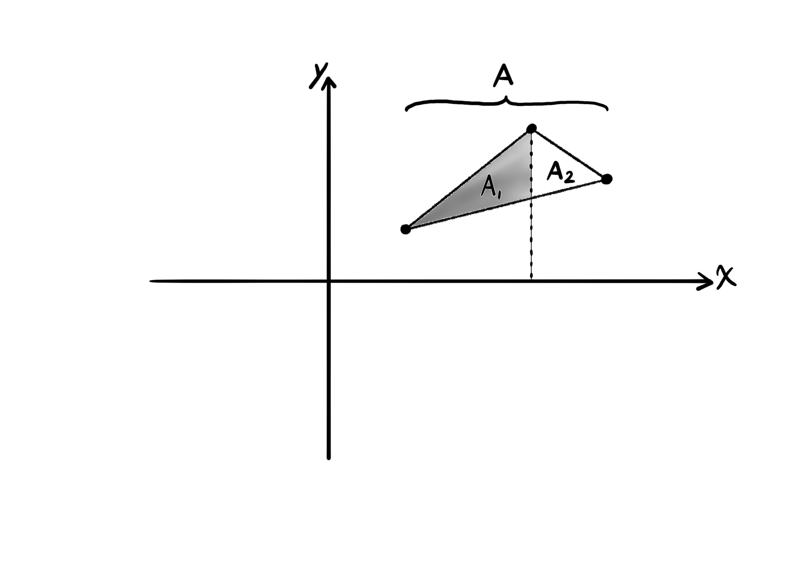
در این حالت ناحیه را به دو یا چند ناحیه کوچکتر تقسیم میکنیم. به طوری که هر ناحیهی کوچک حداقل نسبت به یک متغیر منظم باشد.
$\int \int_A f(x, y) = \int \int_{A_1} f(x, y) \ dy \ dx + \int \int_{A_2} f(x, y) \ dy \ dx$.
آ پاییننویس ۱ و آ پاییننویس ۲، ناحیههای منظم نسبت به متغیر وای هستند.
مثال
اگر ناحیهی آ محصور به خطوط زیر باشد، حجم حاصل از رویهی تابع اف ایکس و وای روی این ناحیه را به شکل انتگرال دوگانه بنویسید.
$y = x$, $y = 2x$, $x = 1$, $x = 2$
$\int \int_A f(x, y) \ dA = \int_1^2 \int_x^{2x} f(x, y) \ dy \ dx$.
مثال
اگر ناحیهی آ محصور به خطوط زیر باشد، حجم حاصل از رویهی تابع اف ایکس و وای و این ناحیه را به شکل انتگرال دوگانه بنویسید.
$y = x$, $y = \frac{1}{2}x$, $y = 5 - x$.
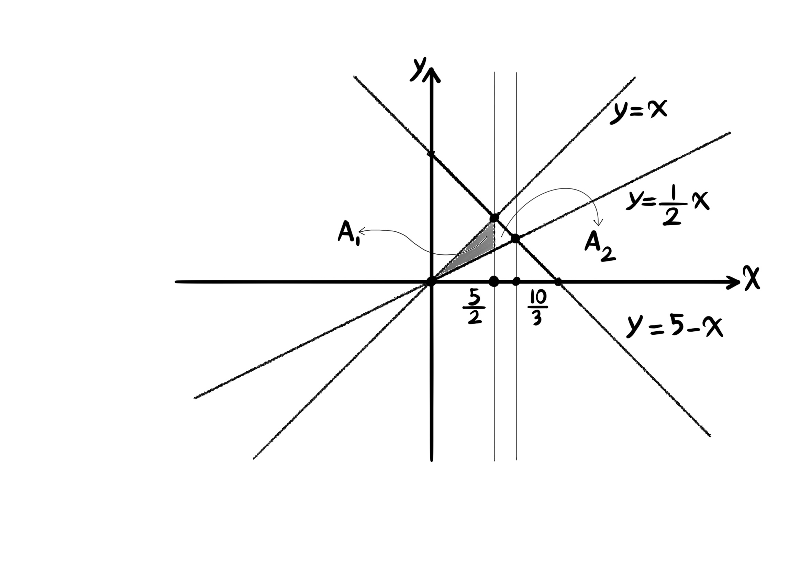
$\int \int_A f(x, y) \ dA = \int \int_{A_1} f(x, y) \ dy \ dx + \int \int_{A_2} f(x, y) \ dy \ dx = \int_0^{\frac{5}{2}} \int_{\frac{1}{2} x}^{x} f(x, y) \ dy \ dx + \int_{\frac{5}{2}}^{\frac{10}{3}} \int_{\frac{1}{2} x}^{5 - x} f(x, y) \ dy \ dx$
تغییر ترتیب در انتگرالگیری دوگانه
بعضی اوقات انتگرال دوگانهی داده شده با ترتیب موجود قابل حل شدن نمیباشد. برای مثال انتگرال زیر قابل حل شدن نمیباشد:
$\int \int e^{y^2} \ dy \ dx$
زیرا انتگرال داخلی جواب ندارد:
$\int e^{y^2} \ dy$
مثال
انتگرال زیر را با تغییر ترتیب در صورت امکان حل کنید.
$\int_0^1 \int_x^1 e^{y^2} \ dy \ dx$
اول باید بررسی کنیم که ناحیهی انتگرالگیری آیا نسبت به متغیر ایکس منظم است. زیرا میخواهیم در ترتیب انتگرالگیری دیفرانسیل ایکس را اول بیاوریم.
ناحیهی انتگرالگیری:
$\left\{ \begin{array}{l} x \leq y \leq 1 &\\ 0 \leq x \leq 1 \end{array} \right.$
$\left\{ \begin{array}{l} x = y, y = 1 &\\ x = 0, x = 1 \end{array} \right.$

این ناحیه نسبت به متغیر ایکس منظم است.
$\int_0^1 \int_0^y e^{y^2} \ dx \ dy = \int_0^1 (xe^{y^2}|_0^y) dy = \int_0^1 (ye^{y^2} - 0) dy = \frac{1}{2} e^{y^2}|_0^1 = \frac{1}{2} (e - 1)$
یادآوری
$\int xe^{x^2} \ dx$,
$u = x^2$,
$du = 2x \ dx$,
$\frac{1}{2} \int e^u \ du = \frac{1}{2} e^u = \frac{1}{2} e^{x^2}$.
مثال
انتگرال زیر را با تغییر ترتیب انتگرالگیری در صورت امکان حل کنید.
$\int_0^1 \int_{\sqrt{y}}^1 sin(\pi x^3) \ dx \ dy$
ناحیهی انتگرالگیری:
$\left\{ \begin{array}{l} \sqrt{y} \leq x \leq 1 &\\ 0 \leq y \leq 1 \end{array} \right.$
$\left\{ \begin{array}{l} x = \sqrt{y}, x = 1 &\\ y = 0, y = 1 \end{array} \right.$
$\left\{ \begin{array}{l} x^2 = y, x = 1 &\\ y = 0, y = 1 \end{array} \right.$
این ناحیه نسبت به متغیر وای منظم است.
$\int_0^1 \int_0^{x^2} sin(\pi x^3) \ dy \ dx = \int_0^1 (y \ sin(\pi x^3)|_0^{x^2}) \ dx = \int_0^1 (x^2 \ sin(\pi x^3) - 0) \ dx$
$\int_0^1 (x^2 \ sin(\pi x^3) - 0) \ dx = -\frac{1}{3 \pi} cos(\pi x^3)|_0^1 = -\frac{1}{3 \pi} (cos(\pi) - cos(0)) = -\frac{1}{3 \pi} (-1 - 1) = \frac{2}{3 \pi}$
مختصات قطبی
دستگاه مختصات باید سازگار باشد و در آن تناقض وجود نداشته باشد.همچنین رابطهی بین مختصات و نقطه یک به یک باشد. نشان دادن مختصات نقطه با متغیرهای آر و تتا، دستگاه مختصات جدیدی به اسم دستگاه مختصات قطبی است. در دستگاه مختصات قطبی متغیر آر فاصلهی نقطهی آ تا مبدا مختصات را مشخص میکند. و متغیر تتا زاویهای که خط واصل از نقطهی آ تا مبدا مختصات با جهت مثبت محور ایکسها میسازد، را مشخص میکند.
$A = (x, y) = (r \ cos(\theta), r \ sin(\theta))$
$A = (r, \theta)$
$sin(\theta) = \frac{y}{r}$
$cos(\theta) = \frac{x}{r}$
$\tan(\theta) = \frac{y}{x}$
قضیهی فیثاغورس:
$r^2 = x^2 + y^2$
یادآوری
فرمول دایرهای به مرکز مبدا مختصات و شعاع آر:
$x^2 + y^2 = r^2$
فرمول دایرهای به مرکز آلفا و بتا و شعاع آر:
$(x - \alpha)^2 + (y - \beta)^2 = r^2$
نکته
برای تبدیل انتگرال دوگانه از دستگاه مختصات دکارتی به دستگاه مختصات قطبی، به جای ترتیب انتگرالگیری قرار میدهیم:
$r \ dr \ d\theta$
مثال
اگر آ ناحیهی محدود به دو دایرهی زیر باشد، واقع در ربع اول و دوم،
$\left\{ \begin{array}{l} x^2 + y^2 = 1 &\\ x^2 + y^2 = 4 \end{array} \right.$
آنگاه انتگرال زیر را در دستگاه مختصات قطبی حل کنید.
$\int \int_A e^{x^2 + y^2} \ dx \ dy$
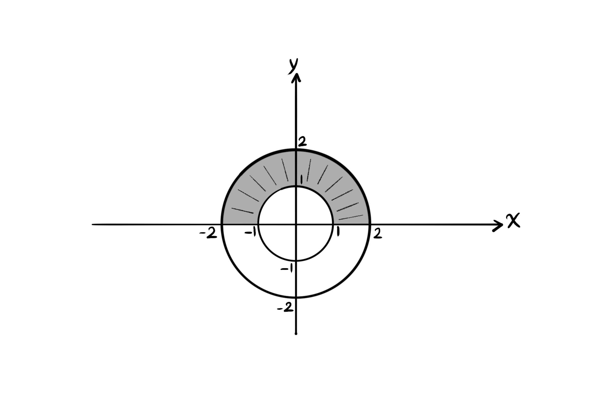
$\int \int_A e^{x^2 + y^2} \ dx \ dy = \int_0^{\pi} \int_1^2 e^{r^2} \ r \ dr \ d\theta = \int_0^{\pi} (\frac{1}{2} e^{r^2} |_1^2) d\theta$
$\int_0^{\pi} (\frac{1}{2} e^{r^2} |_1^2) d\theta = \int_0^{\pi} \frac{1}{2} (e^{2^2} - e^{1^2}) d\theta$
$\int_0^{\pi} \frac{1}{2} (e^{2^2} - e^{1^2}) d\theta = \int_0^{\pi} \frac{1}{2} (e^4 - e^1) d\theta = (\frac{\theta}{2} (e^4 - e) |_0^{\pi})$
$(\frac{\theta}{2} (e^4 - e) |_0^{\pi}) = \frac{\pi}{2} (e^4 - e) - 0 = \frac{\pi}{2} (e^4 - e)$.
مثال
انتگرال زیر را در دستگاه مختصات قطبی حل کنید.
$\int_0^1 \int_0^{\sqrt{1 - y^2}} sin(x^2 + y^2) \ dx \ dy$
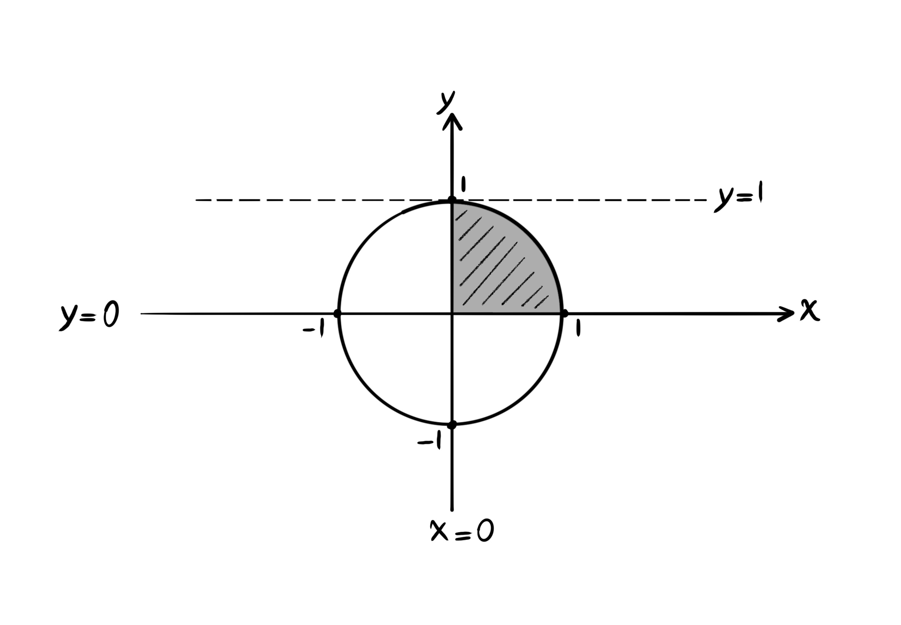
$\left\{ \begin{array}{l} 0 \leq x \leq \sqrt{1 - y^2} &\\ 0 \leq y \leq 1 \end{array} \right.$
$\left\{ \begin{array}{l} x = 0, x = \sqrt{1 - y^2} &\\ y = 0, y = 1 \end{array} \right.$
$\left\{ \begin{array}{l} x = 0, x^2 + y^2 = 1 &\\ y = 0, y = 1 \end{array} \right.$
$\int_0^{\frac{\pi}{2}} \int_0^1 sin(r^2) r \ dr \ d\theta = \int_0^{\frac{\pi}{2}} -\frac{1}{2} cos(r^2) |_0^1 d\theta$
$\int_0^{\frac{\pi}{2}} -\frac{1}{2} cos(r^2) |_0^1 d\theta = \int_0^{\frac{\pi}{2}} ((-\frac{1}{2} cos(1)) - (-\frac{1}{2} cos(0))) d\theta$
$\int_0^{\frac{\pi}{2}} ((-\frac{1}{2} cos(1)) - (-\frac{1}{2} cos(0))) d\theta = \int_0^\frac{\pi}{2} (-\frac{1}{2} cos(1) + \frac{1}{2}) d\theta$
$\int_0^\frac{\pi}{2} (-\frac{1}{2} cos(1) + \frac{1}{2}) d\theta = (\frac{1}{2} - \frac{1}{2} cos(1)) \theta |_0^\frac{\pi}{2}$
$(\frac{1}{2} - \frac{1}{2} cos(1)) \theta |_0^\frac{\pi}{2} = \frac{\pi}{2} (\frac{1}{2} - \frac{1}{2} cos(1)) = \frac{\pi}{4} (1 - cos(1))$.
روش تغییر متغیر:
$sin(x^2) dx$,
$u = x^2$,
$du = 2x \ dx$,
$\int x \ sin(x^2) dx = \frac{1}{2} \int sin(u) du = \frac{1}{2} (-cos(u)) = -\frac{1}{2} cos(x^2)$.
Holonomy
هولونومی
مثال: کره
اگر یک کره را با صفحهای که از مرکز کره میگذرد به دو نیم تقسیم کنیم، آنگاه فصل مشترک صفحه با سطح کره بزرگترین دایرهای است که میتوان بر روی کره رسم نمود و به همین دلیل آن را یک دایرهی بزرگ مینامند. در یک صفحهی تخت، کوتاهترین مسیر بین هر دو نقطه ژیودزیک نامیده میشود. ژیودزیکها در صفحه خطهای مستقیم هستند. اما ژیودزیکها روی کره، تمام یا قسمتی از دایرههای بزرگاند. شکل زیر را در نظر بگیرید، که مثلث ژیودزیک دلتا را بر روی کرهای با شعاع آر نمایش میدهد، به طوری که اندازهی زاویهی بین دو نصف النهار برابر با تتا است، و ضلع سوم، قطعهای از خط استوا باشد.
برای انتقال دادن بردار آ مماس بر سطح یک رویه مانند کره در مسیری ژیودزیک به طور موازی، با سرعت وی، به سادگی زاویهی بین بردار انتقال موازی آ و بردار سرعت وی را به طور ثابت نگه داشته، در حالی که بردار انتقال موازی آ بر روی آن مسیر ژیودزیک حرکت داده میشود.
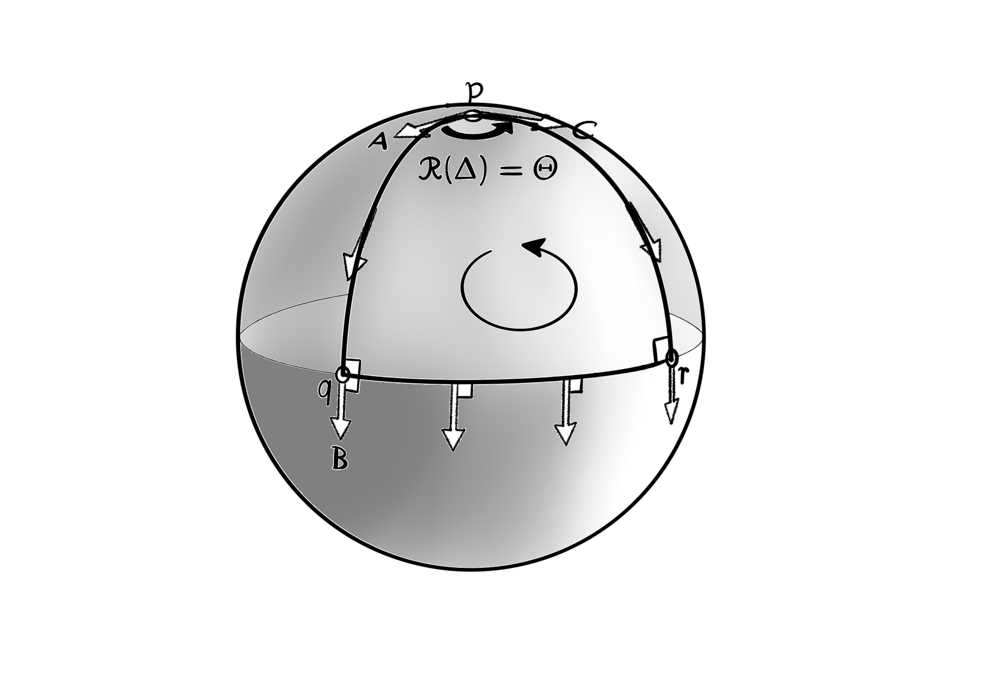
وقتی که بردار آ به دور مثلث ژیودزیک دلتا انتقال موازی داده شود، به نقطهی پی بازمیگردد در حالی که به اندازه ی هولونومی مثلث دلتا چرخانده شده است، که مقدار آر دلتا برابر است با زاویهی تتا.
فرض کنید که ما از بردار ب که به سمت جنوب اشاره میکند شروع کنیم، و سپس با استفاده از روش بالا آن را به طور موازی به نقطهی پ انتقال دهیم، در امتداد دو مسیر ژیودزیک متفاوت. اگر ما بردار ب را به سمت شمال در امتداد نصف النهار ژیودزیک کیو-پ حمل کنیم، آن گاه به بردار آ دست پیدا میکنیم. اما اگر در عوض انتقال موازی آن را به سمت شرق در امتداد قطعهی آر-پ از نیمگان ژیودزیک (با حفظ زاویهی قایم نسبت به ژیودزیک) و سپس آن را به سمت شمال در امتداد نصف النهار ژیودزیک آر-پ حمل کنیم، به بردار سی میرسیم که به طور کامل متفاوت است. این اختلاف میان نتیجهی انتقال موازی در امتداد مسیرهای متفاوت همان هولونومی است که پیشتر به آن اشاره کردیم، که در سال ۱۹۱۷ لوی چیویتا آن را کشف کرد.
$p \to q \to r \to p$.
بهتر این است که به این هولونومی از راهی کمی متفاوت نگاه کرد. به جای حمل کردن بردار ب به نقطهی پ در امتداد دو مسیر متفاوت، فرض کنید که ما با بردار آ از نقطهی پ شروع کنیم و سپس آن را به طور همرو به صورت پادساعتگرد به دور حلقهی بسته انتقال دهیم، از نقطهی پ به نقطهی کیو و سپس به نقطهی آر و در نهایت به نقطهی پ. شکل نشان میدهد که بردار به نقطهی پ باز میگردد در حالی که تحت چرخشی پادساعتگرد به اندازهی آر دلتا برابر با زاویهی تتا چرخانده شدهاست. این هولونومی دلتا است، و حالا میتوانیم تعریف عمومی آن را بگوییم:
$R(\Delta) = \Theta$
$R(L)$
اگر دو بردار در امتداد یک خم بر روی سطح یک رویه به طور موازی انتقال داده شوند، آنگاه زایهی بین آن دو بردار ثابت میماند. توجه کنید که تعریف هولونومی مشخص نمیکند که کدام بردار مماس باید به طور موازی منتقل شود. دلیل این است که همهی بردارهای مماس باید به طور صلب با یکدیگر بچرخند، همگی به اندازهی زاویهی آر ال. پس داریم،
$q \to r \to p \to q$.
تعریف هولونومی همچنین مشخص نمیکند که از کجای خط ال باید شروع کرد. برای فهمیدن این که چرا این نیز اهمیتی ندارد، فرض کنید که به جای شروع کردن با بردار آ از نقطهی پ، ما با بردار ب از نقطهی کیو شروع کنیم، سپس بردار ب را از نقطهی کیو به نقطهی آر، سپس به نقطهی پ، و در نهایت به نقطهی کیو به طور موازی منتقل کنیم. با استفاده از تعریف انتقال موازی بردارها، میتوانید به طور بصری تایید کنید که در هنگام بازگشتن به نقطهی کیو، آن بردار مانند قبل به همان اندازه چرخیده باشد.
$R(\Delta) = \Theta$
به طور عمومی و برای تمرین، خود را متقاید کنید که هولونومی مستقل از نقطهی آغازین حلقه است (همچنین بردار مماس اولیه).
بعد، به این توجه کنید که در شکل بالا معنای پادساعتگرد هولونومی بر روی کره با معنایی که در آن مثلث دلتا را دور میزنیم مطابقت دارد. این حقیقت به آن دلیل است که کره انحنای مثبت دارد.
اگر ما در عوض بردار را بر روی یک رویه با انحنای منفی جابهجا کرده بودیم، آنگاه چرخش بر خلاف جهت انتقال میشد. در این جا ما شما را به شدت تشویق میکنیم تا این حقیقت را با تکیه بر مشاهده بررسی کنید، با ساختن خطوط ژیودزیک با استفاده از نوار چسبان، تا یک مثلث ژیودزیک بر روی بخشی از سطح یک میوه یا سبزی مناسب با انحنای منفی درست شود. سپس میتوانید یک خلال دندان را به طور موازی به دور مثلث منتقل کنید، با حفظ کردن یک زاویهی ثابت با هر لبهی متوالی.
$K = (1 / R^2)$
نه تنها علامت آر ال با انحنای درون مثلث دلتا تعیین میشود، بلکه بزرگی آن نیز تعیین میشود! انحنای ثابت کره با حرف کا نامیده میشود و مساوی است با یک بر روی مجذور شعاع کره. پس کل انحنایی که درون مثلث دلتا قرار دارد برابر است با انتگرال دوگانه زیر:
$K(\Delta) = \int \int_{\Delta} K \ dA = \frac{1}{R^2} \int \int_{\Delta} dA = \frac{1}{R^2} [R^2 \ \Theta] = \Theta$
و بنابراین، برای خط ال برابر با مثلث دلتا داریم
$R(L) = K(L)$
همان طور که در آینده خواهیم دید، این موضوع برای هر حلقهی سادهی ال بر روی هر رویهی اس درست میباشد! ساختن این نتیجه به ما کلیدی به ظاهر جهانی میدهد، که قابلیت گشودن بعضی از عمیقترین رازهایی را دارد که با آنها مواجه شدهایم. این کلید قفل قضیهی خارقالعادهی کارل فریدریش گاوس را باز میکند. کلید قفل طبیعت درونزاد قضیهی گاوس-بونت سراسری را باز میکند. قفل فرمول انحنای متریک، فازور پیشتازان فضایی که از آینده به ما رسیده است، را باز میکند. و تعمیم دادن آن به ابعاد بالاتر قفل انحنای ریمانی را باز خواهد کرد که در قلب نظریهی جاذبهی فضازمان خمیدهی انیشتین قرار دارد.
در واقع، این فهرست ادامه دارد، و به خارج از محدودهی موضوعی این مقاله گسترش مییابد. فهرست شامل کشف خارقالعادهی مایکل بری در سال ۱۳۶۱ شمسی میشود (شاپر و ویلچک ۱۳۶۷ و بری ۱۳۶۹ را در بخش فهرست منابع ببینید) که الان در مکانیک کوانتوم به آن فاز بری گفته میشود، و همچنین فاز هندسی در فیزیک. برای یک گلچین از کاربردهای هولونومی در فیزیک، بری ۱۳۶۸ را ببینید (اما توجه داشته باشید چیزی که ما هولونومی مینامیم، فیزیکدانان اغلب آن را آنهولونومی مینامند).
هولونومی یک مثلث ژیودزیک عمومی
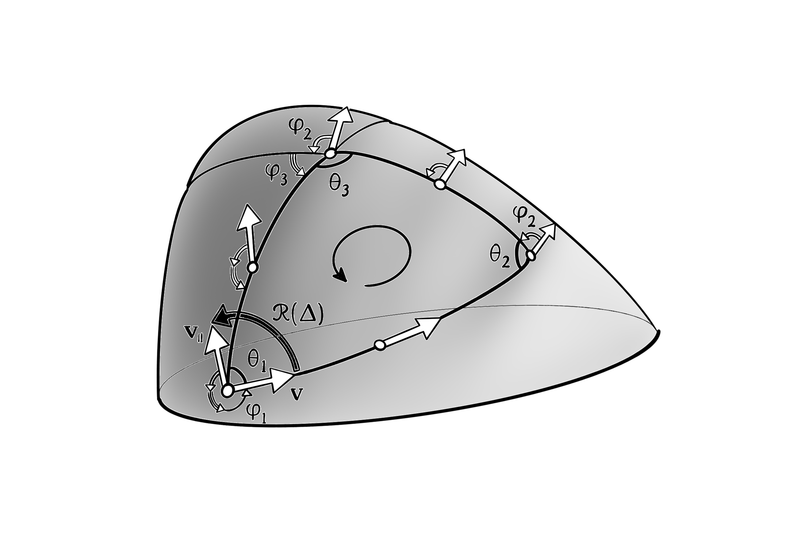
شکل بالا یک مثلث ژیودزیک عمومی را نشان میدهد، که زاویههای داخلی تتا پاییننویس آی و زاویههای خارجی فی پاییننویس آی است، پس
$\theta_i + \phi_i = \pi$
بردار وی مماس نسبت به ضلع اول یک مثلث ژیودزیک عمومی به نام دلتا بر رویهای عمومی به طور موازی به دور مثلث دلتا انتقال داده شده است، و با نام وی پاییننویس موازی به نقطهی شروع خود بازمیگردد ، در حالی که با هولونومی آر دلتا چرخانده شده است.
میدانیم که هولونومی آر دلتا از برداری که به دور مثلث دلتا انتقال موازی داده میشود مستقل است، و حالا از این آزادی استفاده میکنیم تا انتخابی انجام دهیم که جواب را واضح و روشن میکند: ما اولین ضلع مثلث دلتا را به عنوان بردار مماس وی انتخاب میکنیم.
انتقال موازی بردار وی را نسبت به ضلع اول مماس نگه میدارد، پس وقتی که به انتهای ضلع برسد، بردار با ضلع دوم زاویهی فی پاییننویس ۲ ایجاد میکند. چون این ضلع دوم نیز ژیودزیک هست، زاویهی فی پاییننویس ۲ در طول زمانی که در امتداد آن انتقال موازی داده میشود، حفظ میشود. در نتیجه، وقتی که بردار به انتهای ضلع دوم برسد، زاویهی آن با ضلع آخر برابر میشود با حاصلجمع فی پاییننویس ۲ و فی پاییننویس ۳، و این زاویه در حالی که بردار در امتداد آن لبه حرکت میکند حفظ میشود، تا در نهایت به نقطه ی شروع بردار وی برگردد، که با ضلع اولیه زاویهی فی پاییننویس ۱ به اضافهی فی پاییننویس ۲ به اضافهی فی پاییننویس ۳ ایجاد میکند. پس، میتوانیم ببینیم که هولونومی برابر است با
$R(\Delta) = 2\pi - (\phi_1 + \phi_2 + \phi_3)$
نکتهی بحث انحنای کل یک حلقهی صفحهای (اوملافساتز هوپف) این است که، اگر یک ذره به دور مثلث اقلیدسی دلتا سفر کند آنگاه چرخش بردار سرعت برابر است با ۳۶۰ درجه، یا:
$(\phi_1 + \phi_2 + \phi_3) = 2\pi$
پس فرمول هولونومی بالا اختلاف پیشبینی اقلیدسی ۲پی را با چرخش کل زاویهی فی پاییننویس یک به اضافهی فی پاییننویس ۲ به اضافهی فی پاییننویس ۳ اندازهگیری میکند.
در این جا ما از راهی متفاوت استفاده کردیم تا درجهی انحرافی که یک مثلث ژیودزیک بر رویهای خمیده نسبت به نمونهی اقلیدسی پیدا میکند، که به آن زاویهی مازاد گفته میشود، را اندازهگیری کنیم.
$\Epsilon(\Delta)$
اما در حقیقت، این دو اندازهگیری انحنای درون مثلث دلتا که از نظر مفهومی متفاوتند با یکدیگر برابرند! برای دیدن این حقیقت، رابطهی مجموع زوایای داخلی و خارجی در یک راس مثلث را با فرمول هولونومی مثلث دلتا ترکیب میکنیم:
$R(\Delta) = 2\pi - [(\pi - \theta_1) + (\pi - \theta_2) + (\pi - \theta_3)] = \theta_1 + \theta_2 + \theta_3 - \pi$
پس زاویهی مازاد با هولونومی برابر است:
$R(\Delta) = \Epsilon(\Delta)$
تمام مطالب بالا به راحتی از یک ژیودزیک سهضلعی به یک ژیودزیک امبعدی به نام پی پاییننویس ام تعمیم داده میشود. اول، رابطهی تساوی انحنای درون مثلث با هولونومی حلقه که در بالا نوشتیم، به طور واضحی تعمیم داده میشود تا به نتیجهی زیر برسد
$R(P_m) = 2\pi - \sum_{i=1}^{m} \phi_i$
مجموع زوایای داخلی یک انضلعی اقلیدسی برابر است با:
$(n - 2) \pi$
بنابراین، زاویهی مازاد یک انضلعی ژیودزیکی بر سطح یک رویهی خمیده، که با حرف ای نمایش داده میشود، برابر است با:
$E(nـgon) = [angle \ sum] - (n - 2) \pi$.
از طرف دیگر، زاویه ی مازاد چندضلعی پی پاییننویس ام با رابطهی بالا داده شده است،:
$\Epsilon(P_m) = \sum_{i-1}^m \theta_i - (m - 2) \pi$
دوباره با استفاده از رابطهی محاسبهی هولونومی در مییابیم که دو شیوهی اندازهگیری به ظاهر متفاوت انحنای درون چندضلعی پی پاییننویس ام در حقیقت با هم برابرند:
$R(P_m) = \Epsilon(P_m)$.
هولونومی جمع پذیر است
اگر ما مثلث دلتا را بشکافیم و به دو مثلث ژیودزیک دلتا پاییننویس ۱ و دلتا پاییننویس ۲ جدا کنیم، آنگاه مازاد زاویهای به نام ای جمعپذیر است:
$E(\Delta) = E(\Delta_1) + E(\Delta_2)$
از تساوی هولونومی با زاویهی مازاد میشود نتیجه گرفت که هولونومی آر نیز جمعپذیر است. اما، نقش ناحیهی آر را نسبت به دو مفهوم دیگر اساسیتر میشماریم، پس به جای اینکه ویژگی جمعپذیری آن را به دلیل به ارث رسیدن از مازاد زاویهای ای بدانیم، باید این موضوع را به طور مستقیم بفهمیم.
شکل زیر چنین راه مستقیمی است، اثبات هندسی که ناحیهی آر جمعپذیر است:

$R(\Delta) = R(\Delta_1) + R(\Delta_2)$.
هولونومی جمعپذیر است. مثلث ژیودزیک دلتا به وسیلهی وارد کردن یک ژیودزیک خطفاصلهدار به مثلثهای دلتا یک و دلتا دو افراز شده است. بردار وی که نسبت به ضلع اول مثلث دلتا یک مماس است به دور مثلث دلتا یک انتقال موازی داده میشود و سپس به دور مثلث دلتا دو. میبینیم که انتقال موازی رفت و برگشتی در امتداد ژیودزیک خطفاصلهدار همدیگر را خنثی میکنند، و بنابراین مجموع دو هولونومی مثلثهای دلتا یک و دلتا دو برابر است با هولونومی مثلث دلتا.
در اینجا ما ژیودزیک خطفاصلهدار را در مثلث ژیودزیک دلتای اصلی وارد کردهایم، که در نتیجهی آن به دو مثلث ژیودزیک دلتا یک و دلتا دو تقسیم میشود. بردار مماس بر اولین ضلع مثلث دلتا یک به دور مثلث دلتا یک به طور موازی انتقال داده میشود، که در بازگشت به خانه به اندازهی هولونومی دلتا یک چرخانده شده است. سپس بردار مماس وی به دور مثلث دلتا دو انتقال موازی داده میشود، که در بازگشت به خانه به اندازهی هولونومی دلتا دو چرخیده شده است. پس چرخش کل بعد از انتقال همرو به دور هر دو مثلث دلتا یک و دو برابر است با مجموع هولونومی دلتا یک و هولونومی دلتا دو.
اما به دلیل اینکه ضلع آخر مثلث دلتا یک (که در نقطهی کیو شروع میشود) همچنین اولین ضلع مثلث دلتا دو است (که در نقطهی کیو خاتمه پیدا میکند)، ما بردار را در امتداد ژیودزیک خطفاصلهدار دوبار انتقال موازی میدهیم، به طور متوالی، در جهتهای مخالف، که بنابراین بردار بدون تغییر به نقطهی کیو باز میگردد. پس انتقال موازی یک بردار به دور مثلث دلتا یک و سپس مثلث دلتا دو به طور دنبالهای معادل است با انتقال موازی آن به دور مثلث دلتا، همان طور که نشان داده شد.
به این معنی که، انتقال موازی رفت و برگشتی در امتداد یک خم خنثیکننده است، حتی اگر آن خم ژیودزیک نباشد.
مثال: صفحهی هذلولوی
این بخش را با به کار بردن مفهوم انتقال موازی برای شبهکره به پایان میرسانیم (به وسیلهی مدل نیمصفحهای بلترامی-پوانکاره)، تا یک اثبات هندسی درونزاد ساده و جدید برای انحنای ثابت منفی صفحهی هذلولوی به دست آوریم. برای این کار نکتهی بنیادی تساوی انحنای درون حلقهی بستهی ساده با هولونومی حلقه را فرض خواهیم کرد، که در آن هولونومی یک حلقه انحنای کل درونش را اندازهگیری میکند.
پیش از این که اثبات را شروع کنیم، مشاهدهای مهم انجام میدهیم: همان طوری که در ابتدا از زاویهی مازاد برای به دست آوردن تعریفی ذاتی برای انحنا در یک نقطه استفاده کردیم، پس برابری انحنای درون حلقه و هولونومی حلقه نیز میتواند به همان شکل برای پیدا کردن انحنا در نقطهی پی استفاده شود.
اگر ال پاییننویس پی یک حلقهی کوچک به دور نقطهی پی باشد، آنگاه میتوانیم در حالی که حلقه به دور نقطهی پی کوچکتر میشود، تساوی بالا را بر حلقهی ال پاییننویس پی اعمال کنیم تا انحنا در نقطهی پی را پیدا کنیم. هولونومی به ازای واحد مساحت در نقطهی پی برابر است با:
$K(p) = \lim_{L_p \to p} \frac{R(L_p)}{A(L_p)}$
حالا میتوانیم به مسالهی پیش رو برگردیم. روی شبهکرهای با شعاع آر، مستطیلی با راسهای آ، ب، ث، د را در نظر بگیرید (که به طور پادساعتگرد دنبال میشوند) که توسط پارهخطهای آ-د و ب-ث از مولدهای کشاندهی ژیودزیک کراندهی شدهاند (تتا زاویهای از اولین به دومین است) به همراه قوسهای دایرهای افقی غیر ژیودزیک آ-ب و ث-د. قسمت سمت چپ شکل زیر را ببینید. همان طوری که نشان داده شده است، بگذارید یک بردار را به دور آ-ب-ث-د به طور موازی منتقل کنیم تا انحنای کل درون آن را کشف کنیم.
در سمت راست شکل زیر، تصویری همشکل در مدل بلترامی-پوانکاره نمایش داده شدهاست: ناحیهی آ-ب-ث-د بر مستطیل با ضلعهای زیر نگاشت شدهاست:
مستطیل آ-ب-ث-د (با مساحت آ) روی شبهکره (در سمت چپ شکل) به طور همشکل بر مستطیل ای-بی-سی-دی در نیمصفحهی بالایی بلترامی-پوانکاره (در سمت راست شکل) نگاشت شده است. زمانی که بردار نمایش داده شده در نقطهی آ به طور موازی و پادساعتگرد به دور آ-ب-ث-د حمل می شود، با چرخش ساعتگرد به اندازهی آر برمیگردد. همشکل بودن این نگاشت تضمین میکند که بردار انتقال موازی داده شده در نگاشت به همان اندازهی آر چرخانده میشود.
$A = (x, Y_1), \ B = (x + \Theta, Y_1), \ C = (x + \Theta, Y_2), \ D = (x, Y_2)$.
از طرفی المان دیفرانسیلی مساحت بر سطح شبهکره برابر است با:
$dA = \frac{R^2 \ dx \ dy}{y^2}$
پس، با استفاده از رابطهی بالا مساحت ناحیهی آ در مستطیل آ-ب-ث-د روی شبهکره برابر است با انتگرال دوگانهی زیر:
$A = \int_{x = 0}^{x = \Theta} \int_{Y_1}^{Y_2} \frac{R^2 \ dx \ dy}{y^2} = R^2 \Theta [\frac{1}{Y_1} - \frac{1}{Y_2}]$.
در نقطهی آ بردار اولیهای انتخاب کردهایم که به سمت بالای شبهکره اشاره میکند، یعنی در امتداد آ-د. در حالی که بردار را در امتداد آ-ب انتقال موازی میدهیم، به طور ساعتگرد نسبت به جهت حرکت میچرخد. بردار در امتداد ب-ث زاویهی ثابت نمایش داده شده با نقطه را نسبت به جهت حرکت حفظ میکند (زیرا در امتداد یک ژیودزیک است). بردار در امتداد ث-د به طور پادساعتگرد نسبت به جهت حرکت میچرخد، اما نه به اندازهای که در امتداد آ-ب چرخید. در نهایت، بردار زاویهی ثابت با ژیودزیک د-آ را حفظ میکند، در حالی که به اندازهی خالص منفی آر چرخانده شده است، به نقطهی آ باز میگردد.

برداری که در نقطهی آ به طور اولیه عمودی است در امتداد پارهخط اقلیدسی افقی ای-بی در نیمصفحهی بلترامی-پوانکاره انتقال موازی داده میشود. برای این کار، پارهخط ای-بی را با ان عدد پارهخط ژیودزیک تقریب میزنیم (قوسهای دایرهای که در امتداد افق در وسط چیده شدهاند، خطی که در آن وای برابر با صفر است) بعد به طور دنبالهای زاویهی ثابت با هر کدام از پارهخطهای ژیودزیک را حفظ میکنیم. در پایان، اجازه میدهیم که متغیر ان به سمت بینهایت میل کند.
به خاطر این که نگاشت بلترامی-پوانکاره همشکل است، وقتی که بردار به دور مستطیل ای-بی-سی-دی انتقال موازی داده میشود به اندازهی همان مقدار خالص آر چرخیده میشود. اما، جوری که الان توضیح میدهیم، مزیت اساسی این نگاشت این است که ما را قادر میکند تا ببینیم این چرخش به طور واقعی چه چیزی است.
پارهخط غیر ژیودزیکی افقی ای-بی به طول اقلیدسی تتا را به ان عدد قطعهی کوچک به طول تتا بر روی ان تقسیم کنید. سپس، همان طوری که در شکل بالا نشان داده شده است، این قطعهها را با پارهخطهای ژیودزیک تقریب بزنید: به خاطر آورید که اینها، قوسهای دایرهای شکل هستند که بر افق به طور وسطچین قرار داده شدهاند. بگذارید همان طوری که نشان داده شدهاست اپسیلون زاویهای باشد که هر قوس این چنینی با خط افق میسازد.
هنگامی که بردار شروع با حالت اولیهی عمودی در امتداد اولین پارهخط ژیودزیک به طور همرو جابجا میشود، زاویهی آن با آن پارهخط ثابت میماند، و بردار در نتیجه با زاویهی منفی اپسیلون چرخانده میشود. به همین ترتیب برای هر یک پارهخط متوالی، تا پس از اینکه ان عدد پارهخط پیموده شد چرخش کل از آغاز تا پایان برابر با منفی حاصلضرب ان در اپسیلون باشد. اما از آنجا که
$r \epsilon \propto \frac{\Theta}{n}$
$r \propto Y_1$
این را برداشت میکنیم که زاویهی کل چرخش بردار در نگاشت برابر است با
$R_{AB} \propto -n\epsilon \propto -\frac{\Theta}{r} \propto -\frac{\Theta}{Y_1}$.
به همان روش منطقی به تساوی زیر میرسیم:
$R_{CD} = (\frac{\Theta}{Y_2})$
و چون بردار نه در امتداد ژیودزیک بی-سی و نه در امتداد ژیودزیک دی-ای میچرخد، با وجود انتگرال دوگانهی بالا استنباط میکنیم که چرخش خالص در هنگام بازگشتن به نقطهی آ برابر است با
$R = R_{AB} + R_{CD} = -\frac{\Theta}{Y_1} + \frac{\Theta}{Y_2} = [-\frac{1}{R^2}]A$.
پس مقدار چرخش به ازای واحد مساحت برابر است با:
$-\frac{1}{R^2}$
این نکته که این جواب مستقل از اندازه، شکل، و مکان مستطیل است ثابت میکند، با استفاده از رابطهی هولونومی به ازای واحد مساحت در نقطهی پی، که صفحهی هذلولوی در واقعیت انحنای درونزاد منفی ثابتی دارد که نشان داده شد.
The Maxwell field as gauge curvature
میدان ماکسول به عنوان انحنای پیمانهای
اولین معادلهی ماکسول، مشتق بیرونی میدان اف را برابر با صفر قرار می دهد.
$d\textbf{F} = 0$
معادلهی ماکسول این پیامد را دارد که برای یک شکل تفاضلی به نام آ، میدان برابر است با دو برابر مشتق بیرونی شکل تفاضلی آ.
$\textbf{F} = 2d \textbf{A}$
این کار از لم یا برهان کمکی آنری پوانکاره بهره میبرد، که بیان میکند، اگر شکل تفاضلی آر-بعدی آلفا در معادلهی مشتق بیرونی آلفا برابر با صفر صدق کند، آنگاه به طور محلی همیشه یک شکل تفاضلی آر منهای یکـبعدی به نام بتا وجود دارد، به طوری که مشتق بیرونی بتا برابر است با آلفا. به علاوه، در یک ناحیه با توپولوژی اقلیدسی، این نتیجهی محلی به یک نتیجهی سراسری تعمیم داده میشود. مقدار شکل تفاضلی آ، پتانسیل الکترومغناطیسی نامیده میشود. با اینکه مقدار شکل تفاضلی آ توسط میدان اف به طور منحصر به فرد تعیین نمیشود، اما با اضافه کردن یک مقدار مشتق بیرونی تتا مقدار آ مشخص میشود، که در اینجا تتا یک میدان نردهای حقیقی میباشد. یعنی شکل تفاضلی آ به مجموع شکل تفاضلی آ و مشتق بیرونی تتا نگاشت می شود. در نمادگان پاییننویس و بالانویس، این رابطهها به شکل زیر نوشته میشوند:
$F_{ab} = \nabla_a A_b - \nabla_b A_a$
با آزادی
$A_a \mapsto A_a + \nabla_a \Theta$
این آزادی پیمانهای در پتانسیل الکترومغناطیسی به ما میگوید که شکل تفاضلی آ مقداری نیست که بشود آن را به طور محلی اندازهگیری نمود. هیچ آزمایشی نمیتواند وجود داشته باشد که مقدار شکل تفاضلی آ را در نقطهای به دست آورد، زیرا مجموع شکل تفاضلی آ و مشتق بیرونی میدان نردهای تتا به طور دقیق همان نقش فیزیکی را ایفا میکنند که شکل تفاضلی آ به تنهایی بازی میکند. اما پتانسیل، کلیدی ریاضی برای روشی فراهم میکند که به وسیلهی آن میدان ماکسول با موجودیت فیزیکی دیگری به نام سای تعامل میکند. این روش چگونه کار میکند؟ نقش ویژهی پتانسیل برداری آ این است که ما را به یک اتصال پیمانهای مجهز میکند (یا اتصال کلافی).
$\nabla_a = \frac{\partial}\partial x^a - ieA_a$
که نماد ای یک عدد حقیقی خاص است که بار الکتریکی را مقداردهی میکند، که توسط موجودیت سای توصیف میشود. در واقع، این نهاد به طور کلی یک ذرهی کوانتومی باردار خواهد بود، از جمله یک الکترون یا پروتون، و تابع سای، تابع موج مکانیک کوانتومی ذره میشود. برای معنی تمام این عبارتها بنگرید به مبحث فصل ۲۱ام کتاب راه رسیدن به واقعیت نوشتهی آقای راجر پنروز، جایی که در آن که مفهوم تابع موج توضیح داده شدهاست. تمام چیزی که حالا باید دربارهی آن بدانیم این است که تابع سای سطح مقطعی از یک کلاف تاری میباشد، برای تعریف سطح مقطع کلاف تاری بخش سوم فصل ۱۵ کتاب پنرز را ببینید، یک کلاف که میدانهای باردار را توصیف میکند، و این کلاف است که بر روی آن اتصال نابلا به عنوان یک ارتباط عمل میکند (برای تعریف این کلاف تاری بخش هشتم فصل ۱۵ کتاب پنروز را ببینید.)
تشبیه شیلنگ آب. وقتی که در مقیاس درشت به آن نگاه شود، شیلنگ تکبعدی به نظر میآید، اما زمانی که به طور ریزتر معاینه شود به شکل یک رویهی دوبعدی دیده میشود. به همین ترتیب، بنابر ایدهی کالوزا-کلاین، میتواند ابعاد فضایی اضافی کوچکی وجود داشته باشد که در مقیاس عادی قابل مشاهده نباشد.
مقادیر میدان الکترومغناطیسی اف و آ باردار نیستند (مقدار ای برای آنها برابر با صفر است)، بنابراین همهی معادلات ماکسول پس از این تعریف جدید برای نابلا پاییننویس آ تغییر نمیکنند. یعنی هنوز در آن معادلات داریم نابلا زیرنبشت آ برابر است با مشتق جزیی نسبت به ایکس بالانویس آ، در مختصات تخت مینکافسکی ـ یا در مختصات فضازمان خمیده در صورتی که به طور مناسب تعمیم داده شود. طبیعت هندسی کلاف چیست که این اتصال بر روی آن عمل میکند؟ یک دیدگاه ممکن است به این کلاف طوری نگاه کند که تارهایی از شکل دایره بر روی فضازمان ام داشته باشد، که این دایره یک ضریب فاز را برای تابع موج توصیف میکند. (این همانگونه چیزی است که در تصویر کالوزا-کلاین که در شکل بالا به آن اشاره شد، اما در آن مورد کل کلاف به عنوان فضازمان شناخته میشود.) بهتر است به کلاف، به عنوان کلاف برداری مقدارهای ممکن تابع سای در هر نقطه فکر کنیم، به طوری که آزادی ضرب کردن فاز، کلاف را به یک کلاف یو(۱) بر روی فضازمان ام تبدیل میکند. برای معنی پیدا کردن، تابع موج سای باید یک میدان مختلط باشد که تعبیر فیزیکی آن، به طور مناسبی، نسبت به جایگزینی نگاشت زیر حساس نباشد (که در اینجا تتا یک میدان حقیقی بر خمینهی ام است).
$\Psi \mapsto e^{i\theta} \Psi$
از این جایگزینی با عنوان تبدیل پیمانهای الکترومغناطیسی یاد میشود، و این حقیقت که تعبیر فیزیکی نسبت به این جایگزینی غیر حساس است پایایی پیمانهای نامیده میشود. پس انحنای اتصال کلاف ما میشود تانسور میدان ماکسول، اف پاییننویس آ پاییننویس ب:
$F_{ab}$
پیش از این که با این ایدهها کاوش کنیم، بهتر است که چند نکتهی تاریخی را بیان کنیم. مدت کوتاهی پس از این که انیشتین نظریهی نسبیت عام خود را در سال ۱۲۹۳ شمسی معرفی کرد، وایل در سال ۱۲۹۶ یک تعمیم پیشنهاد داد که در آن مفهوم واژهی طول وابسته به مسیر میشود. (هرمان وایل، متولد ۱۲۶۳ وفات ۱۳۳۳، یک چهرهی مهم ریاضی در قرن بیستم بود. در حقیقت، در میان کارهای آن ریاضی دانانی که به طور تمام در قرن بیستم مشغول به نوشتن بودند، کار او در ذهن من تاثیرگذارترین بود. و او نه تنها به عنوان یک ریاضی دان محض مهم بود، بلکه همچنین به عنوان یک فیزیک دان.) در نظریهی وایل، مخروطهای پوچ نقش بنیادی خود را که در نظریهی انیشتین دارند حفظ میکنند (برای مثال برای تعریف کردن سرعتهای محدود کننده برای ذرات دارای جرم و فراهم کردن گروه لورنتس محلی که در همسایگی هر نقطه عمل میکند)، پس یک متریک به نام جی از گونهی لورنتس (برای مثال +−−−) هنوز به طور محلی به هدف تعریف کردن آن مخروطها مورد نیاز است. اما، هیچ مقیاس مطلقی برای اندازهگیری زمان یا فضا وجود ندارد، پس در طرح وایل، متریک فقط به تناسب داده میشود. بنابراین، تبدیلهایی به شکل
$g \mapsto \lambda g$
به ازای یک تابع نردهای لاندا بر روی فضازمان ام قابل قبول هستند، این تبدیلها مخروطهای پوچ ام را دستخوش تغییر نمیکنند. (از این تبدیلها با عنوان تجانس همشکل متریک جی یاد میشود. در نظریهی وایل، هر انتخاب متریک جی به ما یک پیمانهی ممکن میدهد که با آن فاصلهها و زمانها را میتوان اندازهگیری نمود.) علی رغم اینکه ممکن است وایل فاصلههای فضایی را بیشتر مدنظر داشته است، برای ما مناسبتر است که در قالب اندازهگیری زمان فکر کنیم. (مطابق دیدگاه فصل ۱۷ کتاب پنروز). پس، در هندسهی وایل، ساعتهای ایدهآل مطلق وجود ندارند. آهنگی که یک ساعت با آن زمان را اندازهگیری میکند به تاریخچهی آن ساعت بستگی پیدا میکند.
الف) نابرابری مثلث اقلیدسی: حاصلجمع آ-ب و ب-ث بزرگتر مساوی آ-ث، که تنها در حالت تبهگنی تساوی برقرار میشود، وقتی که نقطههای آ، ب، ث در راستای یک خط قرار داشته باشند. ب) در هندسهی لورنتس، با خطهای آ-ب، ب-ث، آ-ث همگی شبهزمانی آینده، این نابرابری معکوس میشود: حاصلجمع آ-ب و ب-ث کوچکتر مساوی آ-ث، که فقط وقتی تساوی برقرار میشود که آ، ب، ث همگی روی خط دنیایی یک ذرهی اینرسی باشند. این تناقض ساعت نسبیت خاص را نمایش میدهد که در آن یک مسافر فضایی با خط دنیایی آ-ب-ث بازهی زمانی کوتاهتری را نسبت به ساکنین زمین آ-ث تجربه میکند. ث) هموار کردن گوشههای یک مثلث اقلیدسی تفاوتی در طول لبهها ایجاد نمیکند، و مسیر مستقیم هنوز کوتاهترین است. د) به همین شکل، محدود کردن شتابها (با هموار کردن گوشهها) تفاوتی در زمانها ایجاد نمیکند، و مسیر (لختی) مستقیم هنوز بلندترین است.
این وضعیت بدتر از آنچه که در تناقض ساعت استاندارد مطرح کردیم است، که در شکل بالا توصیف کردم. در هندسهی وایل، میتوانیم یک مسافر فضایی را تصور کنیم که به ستارهای دوردست سفر میکند و بعد به زمین باز میگردد تا ببیند که نه تنها آنانی که روی زمین هستند خیلی بیشتر پیر شدهاند، بلکه ساعتهایی که روی زمین وجود دارند نیز با آهنگی متفاوت با ساعتهای سفینهی موشکی کار میکنند! در شکل پایین قسمت الف را ببینید. با استفاده از این ایده تعجب برانگیز، وایل توانست معادلات نظریهی الکترومغناطیس ماکسول را در هندسهی فضازمان ادغام کند.
در نظریهی اصلی وایل دربارهی الکترومغناطیس، مفهوم بازهی زمانی (یا بازهی فضایی) مطلق نیست و به مسیر پیموده شده وابسته است. الف) یک مقایسه با تناقض ساعت که در شکل پیشین نمایش داده شد. در نظریهی وایل در مییابیم هنگامی که مسافر فضایی به خانه میرسد (خط دنیایی آ-ب-ث) متوجه میشود که نه تنها ساعتهای زمین (خط مستقیم آ-ث) و ساعتهای سفینهی موشکی مقدارهای متفاوتی را اندازهگیری میکنند، بلکه آهنگ تیکتاک کردن آنها نیز متفاوت است! ب) انحنای پیمانهای وایل (که میدان ماکسول به نام اف را به دست میدهد) از این تغییر مقیاس زمانی همشکل به وجود میآید، وقتی که به دور یک حلقهی بینهایت کوچک حرکت کنیم. (اختلاف میان دو مسیر از نقطهی پی به نقطهی همسایهی پی پریم.)
راه اساسی که او با آن این کار را انجام داد رمزنگاری کردن پتانسیل الکترومغناطیسی در یک اتصال کلافی بود، همان طوری که در بالا انجام دادم، اما بدون واحد موهومی آی در عبارت مرتبط با نابلا زیرنبشت آ. می توانیم کلاف مرتبط روی فضازمان ام را به عنوان متریکهایی از جنس لورنتس با نام جی در نظر بگیریم که یک مخروط را به اشتراک میگذارند. پس، تار بالای نقطهای به نام ایکس در فضازمان ام از خانوادهای از متریکهای متناسب تشکیل شده است (که تا جایی که بتوانیم، و در صورت تمایل، ضرایب تناسب را مثبت در نظر میگیریم). این ضریبها، لانداهای ممکنی هستند که در بالا در نگاشت جی به حاصلضرب لاندا و جی دیدیم. برای هر انتخابی خاص از متریک، ما یک پیمانه داریم که با آن فاصلهها یا زمانها در امتداد خمها تعریف میشود. اما هیچ انتخاب پیمانهی مطلقی نباید وجود داشته باشد، و بنابراین هیچ انتخاب متریک ارجحی در کلاس همارزی متریکهای متناسب نباید وجود داشته باشد.
شکل بالا یک کلاف خطی کرنش دادهشده با نام ب را روی منیفلدی به نام ام مساوی با دایره نشان میدهد، با استفاده از تقارنی که با یک ضریب مثبت تارها را کش میدهد. توپولوژی این شکل همان ضرب کارتزین دایره در استوانه میباشد، اما یک کرنش وجود دارد که با استفاده از یک اتصال روی کلاف ب شناخته میشود. این اتصال برای خمهای روی کلاف ب یک مفهوم افقی را به طور محلی تعریف میکند. اما در منیفلد پایه (دایره) دو مسیر از نقطهی آ تا نقطهی ب در نظر بگیرید، مسیر مستقیم (پیکان مشکی) و مسیر غیرمستقیم (پیکان سفید). وقتی که به نقطهی ب میرسیم متوجه یک اختلاف میشویم (با ضریبی مثبت)، که نشانگر این است که مفهوم افقی در اینجا وابسته به مسیر است.
میتوانیم یک کشش مختلط اعمال کنیم، مانند ضرب کردن در یک فاز مختلط (اکسپوننت حاصلضرب آی در تتا، که تتا عددی حقیقی است)، تا گروه تقارنی کلاف برابر با یو(۱) شود، یک گروه ضربی از این اعداد مختلط.
وقتی که انیشتین از این نظریه آگاه شد، به وایل اطلاع داد که با وجود زیبایی ریاضیاتی ایدههای وایل، یک انتقاد فیزیکی بنیادی نسبت به آن دارد. برای مثال، به نظر میرسد بسامدهای طیفی در اثر تاریخچهی یک اتم به طور کامل بدون تغییر باقی میمانند، در حالی که نظریهی وایل خلاف آن را پیشبینی میکند. به طور بنیادیتر، با اینکه همهی قوانین مکانیک کوانتومی مرتبط به طور موفقیت آمیز در آن زمان فرمولبندی نشده بودند، (بنگرید به فصل ۲۱ قسمت ۴ و بخشهای ۷ و ۸ فصل ۲۳ کتاب پنروز) نظریهی وایل در تضاد است با هویت لزوما دقیق در میان ذرات همنوع مختلف (فصل ۲۱ قسمت ۴ در کتاب پنروز را ببینید). به طور ویژه، یک رابطهی مستقیم میان آهنگ ساعتها و جرم ذرات وجود دارد. همان گونه که بعد خواهیم دید، یک ذره دارای جرم حالت سکون ام، یک فرکانس طبیعی برابر با حاصلضرب ام در مجذور سی در معکوس ایچ دارد، که ایچ ثابت پلانک نامیده میشود و سی سرعت نور است.
$f = mc^2 h^{-1}$
پس، در هندسهی وایل، تنها آهنگ ساعتها نیستند که به گذشتهی ذره بستگی دارند، بلکه جرم ذره نیز به تاریخچهی آن وابسته خواهد بود. به این ترتیب، دو پروتون، اگر دارای گذشتههایی متفاوتی باشند، به طور تقریبی به یقین جرمهای متفاوتی دارند، طبق نظریهی وایل، که این اصل مکانیک کوانتومی را نقض میکند که ذرات همنوع باید به طور دقیق مشابه باشند (قسمتهای ۷ و ۸ فصل ۲۳ کتاب پنروز را ببینید.)
با وجود این که این یک مشاهدهی محکوم کننده بود، در ارتباط با ویرایش اصلی نظریهی وایل، بعد معلوم شد که همان ایده کار میکند به شرطی که پیمانهی او به مقیاسگذاری حقیقی اشاره نکند (توسط لاندا)، بلکه به مقیاس گذاری به وسیلهی یک عدد مختلط با اندازهی واحد اشاره کند (اکسپوننت حاصلضرب آی در تتا). این کار شاید ایدهی عجیبی به نظر آید، اما قانونهای مکانیک کوانتومی ما را مجبور میکنند تا از اعداد مختلط در توصیف حالت یک سامانه استفاده کنیم (به طور ویژه بخشهای ۶ و ۹ فصل ۲۱ پنروز را ببینید). به طور خاص، یک عدد مختلط با طول واحد وجود دارد که میتواند بدون عواقب قابل مشاهده و به طور محلی در این حالت کوانتومی ضرب شود، این حالت اغلب تابع موج سای نامیده میشود. این تعویض غیر قابل مشاهده که تابع سای را به حاصلضرب سای و اکسپوننت آی در تتا نگاشت میکند، امروزه هنوز با عنوان تبدیل پیمانهای شناخته میشود حتی با اینکه هیچ تغییری در مقیاس طول را شامل نمیشود، تغییری که چرخش در صفحهی مختلط است (یک صفحهی مختلط بدون ارتباط مستقیمی با ابعاد فضا یا زمان). در این شکل پیچیدهی عجیب، ایدهی وایل تنظیمات فیزیکی مناسبی را برای یک اتصال از نوع گروه تقارنی یو(۱) فراهم آورد، و الان این پایهی تصویر جدید چگونگی تعامل میدان الکترومغناطیسی در واقعیت را تشکیل میدهد. عملگر نابلا که در بالا با استفاده از پتانسیل الکترومغناطیسی تعریف شد
$\nabla_a = \frac{\partial}{\partial x^a} - ieA_a$
یک اتصال کلاف یو(۱) را بر روی کلاف توابع موج کوانتومی سای ارایه میکند. (بخش ۹ فصل ۲۱ پنروز را ببینید).
الف) چیدمان برای آزمایش دوشکاف. الکترون یکی یکی شلیک میشود، که به سمت یک پرده از راه یک جفت شکاف نشانهگیری شده است. ب) الگوی روی پرده وقتی که شکاف دست راست پوشانده شده است. ث) همان، وقتی که شکاف دست چپ پوشانده شده است. د) تداخل وقتی اتفاق میافتد که هر دو شکاف باز باشند. برخی از ناحیههای رو پرده قابل دسترسی نیستند با این وجود که تنها با یک شکاف یا دیگری میتوانند قابل دسترسی باشند.
جالب است که وابستگی به مسیر این اتصال (که میتوانیم آن را با وابستگی به مسیر نمایش داده شده در شکل بالا در کلاف خطی کرنش دادهشدهی بی مقایسه کنیم) به طور برجستهای در انواعی از شرایط تجربی معینی پدیدار میشود، که پدیدهای به نام اثر اهارونوف-بوهم را نشان میدهد. به خاطر این که اتصال نابلای ما فقط در سطح پدیدههای کوانتومی عمل میکند، ما این وابستگی به مسیر را در آزمایشهای کلاسیک نمیبینیم. در عوض، اثر اهارونوف-بوهم به تداخل کوانتومی وابسته است (بخش ۴ فصل ۲۱ پنروز و شکل بالا را ببینید). در مشهورترین نسخه، الکترونها جوری نشانهگیری میشوند تا از دو ناحیهی عاری از میدان الکترومغناطیسی عبور کنند (اف برابر با صفر)، اما با این شرط که با استفاده از یک سولنویید استوانهای بلند جدا شده باشند (که حاوی خطهای مغناطیسی نیرو هست)، تا به یک پردهی تشخیصدهنده در پشت برسند (قسمت الف شکل زیر را ببینید). در هیچ مقطعی الکترونها با میدان اف غیر صفر مواجه نمیشوند. با این حال، ناحیهی عاری از میدان به نام آر (آغاز از منبع، دو نیم شدن به صورتی که از هر دو طرف سولنویید عبور کنند، و در پرده دوباره با یکدیگر جمع شوند) یک ناحیهی ساده به هم وصل شده نیست، و میدان اف بیرون از ناحیهی آر به طوری است که هیچ انتخاب پیمانهای وجود ندارد که پتانسیل آ را در همه جا در ناحیهی آر از بین ببرد. حضور این پتانسیل غیر صفر در ناحیهی غیر ساده متصل شده آر ـ یا به طور صحیحتر، وابسته به مسیر بودن اتصال نابلا در ناحیه آر ـ به جابجایی در لبههای تداخلی در پرده منجر میشود.
اثر اهاروناف-بوهم. الف) یک پرتوی الکترونی به دو مسیر تقسیم میشود که به دو سمت مجموعهای از خطهای شار مغناطیسی میروند (که به وسیلهی یک سولنویید بلند ممکن شده است). پرتوها در یک پرده به یکدیگر آورده میشوند، و الگوی تداخل کوانتومی حاصل (با شکل پیشین مقایسه شود) به شدت شار مغناطیسی وابسته است ـ علیرغم اینکه الکترونها فقط با یک میدان با شدت صفر روبرو میشوند (میدان اف برابر است با صفر). ب) این اثر به مقدار انتگرال حلقهی آ بستگی دارد، که میتواند روی مسیر بستهی غیربدیهی از نظر توپولوژیکی مقداری غیر صفر داشته باشد با اینکه میدان اف روی این مسیر برابر است با صفر. مقدار انتگرال بستهی آ تحت تغییر شکل پیوستهی مسیر در ناحیهی عاری از میدان بدون تغییر باقی میماند.
در واقع، اثر جابجایی لبهای به هیچ مقدار محلی که اتصال آ ممکن است داشته باشد بستگی ندارد (که نمیتواند، زیرا اتصال آ به طور محلی قابل مشاهده شدن نیست، همان طوری که در بالا گفتیم) اما به انتگرال غیر محلی معینی از اتصال آ بستگی دارد. این مقدار انتگرال بستهی اتصال آ است، که در امتداد یک حلقهی توپولوژیکی غیر بدیهی درون ناحیهی آر گرفته میشود. بخش ب شکل بالا را ببینید. به این دلیل که مشتق بیرونی اتصال آ درون ناحیهی آر صفر میشود (به خاطر این که میدان اف در ناحیه آر برار با صفر است)، اگر حلقهی بسته در ناحیهی آر را به طور پیوسته حرکت دهیم انتگرال حلقهی بستهی اتصال آ تغییری نمیکند. این روشن میکند که غیر صفر بودن انتگرال بستهی شکل تفاضلی آ، درون ناحیهای عاری از میدان، و در نتیجه خود اثر اهارونوف-بوهم، به این بستگی دارد که این ناحیهی عاری از میدان به طور توپولوژیکی غیر بدیهی باشد.
به دلیل خاستگاه تاریخی در ایدهی چشمگیر وایل (که در اصل نقشی به عنوان پیمانه کردن وابسته به مسیر بازی کرد)، ما به این اتصال الکترومغناطیسی نابلا یک اتصال پیمانهای میگوییم ـ و این نام همچنین برای تعمیم دادن الکترومغناطیس، با عنوان نظریهی یانگ ـ میلز، به کار برده میشود، که در توصیف تعاملات ضعیف و قوی در فیزیک ذرات جدید استفاده میشود. به این نکته توجه میکنیم که ایدهی اتصال پیمانهای به وجود داشتن یک تقارن وابسته است (که برای الکترومغناطیس تقارن به صورت زیر است:)
$\Psi \mapsto e^{i\theta} \Psi$
که باید دقیق باشد و به طور مستقیم قابل مشاهده کردن نباشد. ما انتقاد انیشتین به ایدهی پیمانه اصلی وایل را به یاد میآوریم، که در آن جرم یک ذره (و بنابراین فرکانس طبیعی آن) به طور مستقیم قابل اندازه گیری است، و پس نمیتواند به عنوان یک میدان پیمانهای به این معنی مورد نیاز استفاده شود. ما بعد خواهیم دید که در بعضی از کاربردهای جدید ایدهی پیمانه این مساله به طور واضحی گل آلود می شود.
References
منابع
- محمد علی کرایه چیان، ریاضی عمومی ۲، انتشارات تمرین، سال ۱۴۰۱، شابک 978-964-7695-64-0
- احمد فیض دیزجی، آنالیز تابعی کاربردی، انتشارات دانشگاه تهران، سال ۱۳۹۳، چاپ دوم، شابک 978-9640363263
- راجر پنروز، راه رسیدن به واقعیت: راهنمای کامل قوانین کیهان، انتشارات جوناتان کیپ، سال ۱۳۸۲، شابک ۰−۲۲۴−۰۴۴۴۷−۸
- تریستان نیدهام، هندسه دیفرانسیل بصری و شکلها: یک نمایش ریاضیاتی پنج پردهای، انتشارات دانشگاه پرینستون، سال ۱۳۹۹، شابک 9780691203690
- جان ام. لی، مقدمهای بر منیفلد ریمانی، انتشارات بینالمللی اسپرینگر، سال ۱۳۹۷، چاپ دوم، شابک 9783319917542, 3319917544
- مایکل بری، تقویم آنهولونومی بریستول، در آقای چارلز فرانک، او-بی-ای اف-آر-اس: گرامیداشت هجدهمین سالگرد تولد، بریستول: آ. هیلگر، سال ۱۳۶۹.
- مایکل بری، کاربردهای فاز هندسی، در نشریهی فیزیک امروز، ۴۳(۱۲):۳۴-۴۰، سال ۱۳۶۸.
- آلفرد شاپر و فرانک ویلچک، فاز هندسی در فیزیک، جلد پنج، سنگاپور: دنیای علمی، سال ۱۳۶۷.